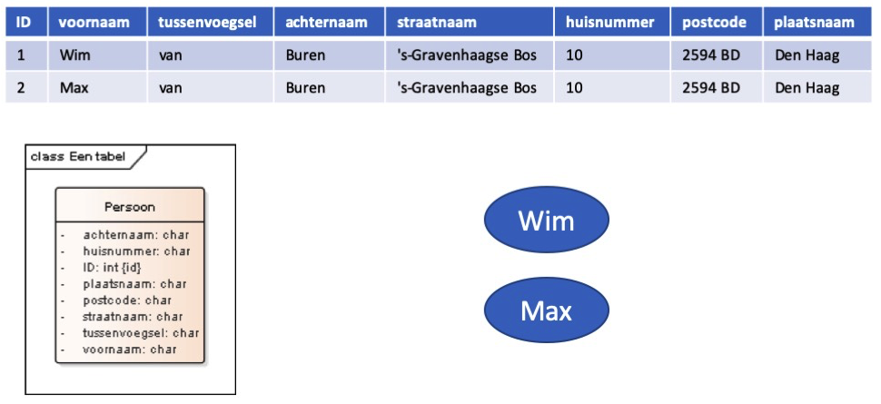
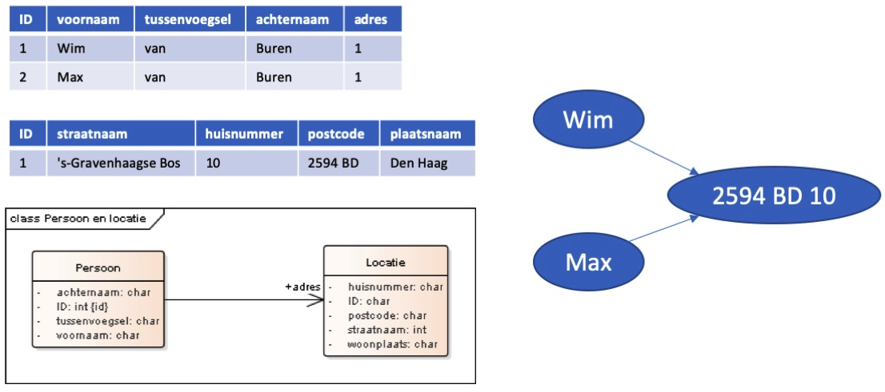
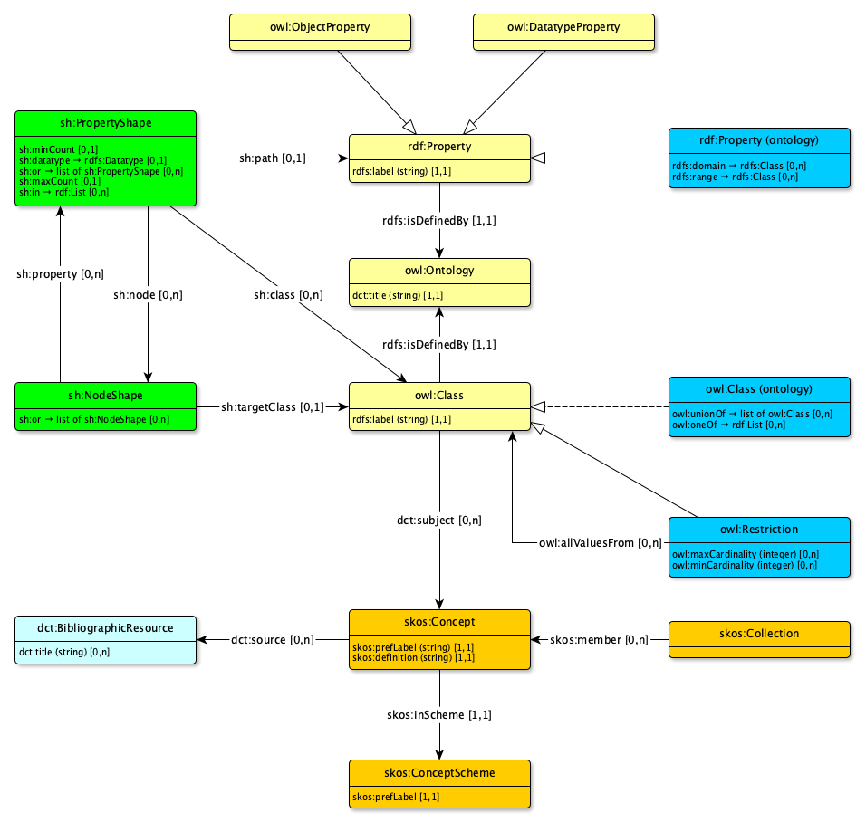

Creative Commons Attribution 4.0 International Public License (CC-BY)
Status van dit document
Deze paragraaf beschrijft de status van dit document ten tijde van publicatie. Het is mogelijk dat er actuelere versies van dit document bestaan. Een lijst van Geonovum publicaties en de laatste gepubliceerde versie van dit document zijn te vinden op https://www.geonovum.nl/geo-standaarden/alle-standaarden.
Een Informatiestandaard en meer specifiek daarbinnen een informatiemodel, is een
formele beschrijving van een toepassingsdomein binnen een digitale context. Op basis van
informatiestandaarden wordt het proces van gegevensinwinning, gegevensdeling en
het gebruik van gegevens ingericht. Informatiestandaarden vormen daarmee een
belangrijk onderdeel van de architectuur van de digitale informatieoverheid, de
i-overheid. In het raamwerk van geo-informatiestandaarden is het Basismodel
Geo-informatie (NEN 3610) het handboek voor het opstellen van
geo-informatiemodellen. NEN 3610 volgt hierin de aanpak van de ISO TC211
Geo-information/Geomatics waarin object oriëntatie als principe en UML
modelleringstaal als richtlijn worden genomen om informatiemodellen in te
beschrijven.
De afgelopen jaren zijn steeds meer use-cases ontstaan waarbij informatie uit
verschillende domeinen aan elkaar moet worden gekoppeld. De i-overheid vraagt
hier ook om. Informatiemodellen worden daarmee integraler van opzet. Hier ligt een
uitdaging: tijdens de ontwikkeling van modellen voor specifieke
informatiedomeinen worden impliciete aannames gemaakt die wel werken binnen een
specifiek domein, maar data integratie tussen domeinen kan compliceren. Hiernaast
speelt een tweede ontwikkeling een rol. Organisaties hebben steeds meer te maken
met een veelheid van informatiestandaarden die elk vanuit eigen perspectief van
belang zijn en ook behouden moeten blijven. In plaats van een veelheid van 1 op
1 transformaties of koppelingen tussen standaarden is men op zoek naar een
mechanisme om met een algemeen koppelvlak betekenisvol ("semantisch") modellen aan
elkaar te kunnen relateren.
Met (onder andere) deze uitdaging in gedachten, heeft het W3C een aantal
`recommendations’ (standaarden) opgesteld omtrent Linked Data. Deze standaarden
specificeren methoden om de aannames rond datadefinities meer expliciet te maken
en daardoor op een machine-leesbare manier meer betekenis aan data te geven,
specifiek met het oog op integratie van data uit verschillende bronnen. De
implementatie-context is daarbij het web. Hiermee wordt dus een beweging van
applicatie-gericht werken naar web-gericht werken ondersteund.
Er ontstaat hierbij een situatie dat binnen de wereld van informatiestandaarden
de huidige manier van werken als "traditioneel" wordt bestempeld en Linked Data
als de nieuwe, innovatieve oplossing wordt gepositioneerd. Dit document richt
zich op de koppeling en integratie van beide methodes. Hier wordt inhoud
aan gegeven door de NEN 3610 methodiek uit te drukken in Linked Data. Er is een
NEN 3610 ontologie gemaakt en gepubliceerd die de basis legt voor een
gezamenlijk vocabulaire voor geo-informatie-ontologieën. Daarnaast zijn er
transformatieregels opgesteld waarmee de in NEN 3610 gedefinieerde en in UML
uitgedrukte geo-informatiemodellen getransformeerd kunnen worden naar
geo-informatie-ontologieën. Er wordt hierbij uitgegaan van internationale
initiatieven die hier al voor ontwikkeld zijn o.a. bij INSPIRE, ISO en W3C. Door
dit toe te passen en door te ontwikkelen in de Nederlandse context wordt deze
kennis in Nederland geborgd in zowel de geo-uml als de geo-Linked Data
community. Het levert ook weer kennis op die naar de internationale fora
teruggebracht wordt.
Het open samenwerkingsverband dat voor dit onderwerp door Geonovum is opgezet
bestaat uit een verzameling van experts uit overheidspartijen die operationele
toepassingen in Linked Data en geo-informatie ontwikkelen of beheren. Drie
ontwikkelingen uit de praktijk zijn hierin richtinggevend: ervaringen bij
Stedelijk Water (OroX), ervaring bij de bouw (NTA 8035 en COINS) en ervaringen bij de
Omgevingswet (DSO). Deze soms ook verschillende methodes hebben een gezamenlijke
basis in één generiek metamodel voor Linked geo-Data. Dit metamodel samen met
het NEN 3610 metamodel is de basis voor een set aan generieke
transformatieregels om een NEN 3610 informatiemodel te kunnen transformeren naar
een eerste versie van een linked geo-data ontologie. Het resultaat hiervan is
echter nog niet geoptimaliseerd voor linked data toepassingen en heeft maar
beperkte operationele waarde. De data zijn als het ware nog maar beperkt
gelinked aan al bestaand vocabulaire en UML constructies werken onbedoeld en
verkeerd door in de linked data ontologie. Door naast de generieke
tranformatieregels nog specifieke regels te ontwikkelen wordt de kwaliteit van
de ontologie verhoogd en de bruikbaarheid binnen de linked data context wel
bereikt. De ontwikkelde transformatieregels zijn een handboek voor het omzetten
van een NEN 3610-UML bronmodel naar een Linked Data doelmodel. De vertaling is
naar de verschillende linked data vocabulaires die hiervoor van toepassing zijn:
RDF, RDFS, SKOS, OWL en SHACL.
Door de transformatieregels te beschrijven en toe te passen op een fictief NEN
3610 geo-informatiemodel van een golfbaan, IMGolf, is er een realistische
testcase waarin de semantiek van een NEN 3610-UML met de semantiek van een
resulterende linked data ontologie wordt vergeleken. Door vervolgens ook een
dataset van een golfbaan in beide modellen uit te drukken ontstaat een volledige
test van werkelijkheid naar abstract model van de werkelijkheid naar een data
representatie van de werkelijkheid.
1. Inleiding
Dit onderdeel is niet normatief.
Steeds meer wordt Linked Data gebruikt als uitwissel- en publicatiemechanisme voor geo-informatie. NEN 3610 is de standaard voor het uitwisselen van geo-informatie, gebruikt Unified Modeling Language (UML) als formele taal voor het vastleggen van semantiek en beveelt Geography Markup Language (GML) aan als technisch uitwisselingsformat. NEN 3610 is hiermee nog niet geschikt om semantiek, gegevensdeling en uitwisseling middels Linked Data te realiseren.
NEN 3610 geeft ook aan dat indien een sector kiest voor een ander formaat dan GML en er nog geen codering van NEN 3610 naar dat technisch formaat bestaat, de sector gevraagd wordt deze codering te beschrijven.
In dit document wordt hier een begin mee gemaakt. Geonovum heeft het initiatief genomen om partijen die actief bij de toepassing van geo-informatie als Linked Data betrokken zijn samen te brengen rond het onderwerp NEN 3610 toegepast in Linked Data. Het doel daarvan is te komen tot een gezamelijke werkwijze die zorgt voor interoperabiliteit tussen Linked geo-Data en een een gecontroleerde relatie met het stelsel van NEN 3610 - informatiemodellen.
Het onderwerp is beperkt tot het ontwikkelen van de methode om een NEN 3610 model te transformeren, te implementeren in Linked Data. De relatie tussen het bronmodel, het NEN 3610 informatiemodel, en het doel, het vocabulaire en de ontologie, staat daarbij voorop. Het gaat dus niet zozeer om een algemene geo-Linked Data codering maar specifiek die van uit een NEN 3610 bronmodel.
Als resultaat worden de volgende producten ontwikkeld:
De NEN 3610 ontologie. De standaard NEN 3610 vertaald naar een LD implementatie.
Hiermee wordt het vocabulaire gerealiseerd dat als basis gebruikt wordt om een NEN 3610 informatiemodel in Linked Data toe te passen.
Het hiermee gecreërde vocabulaire wordt de kandidaat standaard voor de ontologie van NEN 3610.
Transformatieregels of coderingsregels voor een vertaling van een NEN 3610-UML informatiemodel naar een Linked Data omgeving.
De transformatieregels zijn een handreiking voor het omzetten van een NEN 3610-UML bronmodel naar een Linked Data doelmodel. De vertaling is naar de verschillende Linked Data vocabulaires die hiervoor van toepassing zijn: RDF, RDFS, SKOS, OWL en SHACL.
Bij het maken van een informatiemodel staat de use case altijd centraal als kader waaraan een model moet voldoen. Dit geldt ook voor de transformatie van een NEN 3610 model naar Linked Data. De Linked Data toepassing kan een ander doel hebben dan met het NEN 3610 model beoogd is. Er zijn wat dat betreft ook verschillende alternatieve oplosingen voor de transformatie mogelijk. Waar dat zo is geven we dat in dit document aan.
Het project is een open samenwerking tussen de geïnteresseerde partijen. Doormiddel van kennisdeling en aansluiting bij internationale ontwikkelingen wordt er toe gewerkt naar een nationaal en internationaal afgestemd resultaat.
Dit document beschrijft het NEN 3610 Linked Data profiel. Het betreft een standaard, als aanvulling op de bestaande NEN 3610 standaard. Het normatieve deel van deze standaard is beschreven in hoofdstuk zes. De overige hoofdstukken zijn informatief en bieden best practices in het gebruik van de standaard.
Leeswijzer: Het document begint met een beeld van hoe operationeel Linked Data ingezet wordt door middel van een inventarisatie van linked geo-datasets die er in Nederland beschikbaar zijn. Hoofdstuk drie schetst de gebruikstoepassing die met de toepassing van NEN 3610 en NEN 3610 modellen in een Linked Data omgeving bedient wordt en beschrijft de reden waarom een NEN 3610-LD profiel relevant is. Er zijn ook internationaal initiatieven en standaarden die op het onderwerp codering van geo-informatie in RDF in gaan. Een kort overzicht daarvan en hoe die relateren aan dit onderwerp wordt in hoofdstuk vier gegeven.
De object-oriëntatie van NEN 3610 en de ontologische kennismodellen van Linked Data kennen verschillende paradigma's. De basisbeginselen van Linked Data en een referentie naar verdere documentatie geeft in hoofdstuk 5 een inleiding en overzicht over de impact van deze verschillen. Hoofdstuk 6 bevat het NEN 3610-LD profiel en beschrijft het NEN 3610 vocabulaire in de relevante Linked Data vocabulaires. Dit profiel wordt vervolgens in hoofdstuk 7 toegepast en aangevuld met transformatieregels om een NEN 3610-UML informatiemodel te tranformeren naar Linked Data. Hoofdstuk 8 bevat een verdieping hiervan middels de beschrijving van de methode die gevolgd is om de transformatieregels op te stellen. Op het niveau van meta- en metametamodellen worden de bron- en doelomgeving beschreven en aan elkaar gerelateerd. In het laatste hoofdstuk wordt aan de hand van een NEN 3610 voorbeeldmodel, het UML-Golfbaan, de transformatie toegepast en gepubliceerd als ontologie en vocabulaire.
2. Nederlandse LOD Cloud voor geo-datasets
Dit onderdeel is niet normatief.
Klik op onderstaand plaatje om een interactieve versie van de Nederlandse LOD Cloud te openen.
De intentie is om -als spin-off van de ontwikkeling van deze standaard- een Nederlandse LOD Cloud voor geodata te maken die ook gepubliceerd kan worden in de internationale LOD Cloud.
De meest actuele versie van de Nederlandse LOD Cloud is hier te vinden. De bron voor deze LOD cloud is ook als Linked Data opvraagbaar: lod-nen3610.ttl
Voor het beschrijven van een dataset wordt gebruik gemaakt van [geodcat-ap], de Linked Data invulling van de [iso-19115-1-2014] standaard voor het beschrijven van metadata over geometrische datasets.
3. Use case voor een NEN 3610 Linked Data profiel
Dit onderdeel is niet normatief.
De use case die we willen beantwoorden is:
Creëren van interoperabiliteit tussen het stelsel van NEN 3610 informatiemodellen en de toepassing daarvan in Linked Data.
Meer praktisch geformuleerd is dit te realiseren door:
Informatiemodellen en data publicatie conform NEN 3610 vertalen naar kennismodellen en data publicatie conform Linked Data.
Resultaat hiervan is:
ontwikkelen van een standaard toepassing van NEN 3610 in Linked Data: NEN 3610-LD Profiel.
een handreiking voor het transformeren van een UML-NEN 3610 informatiemodel naar Linked Data: NEN 3610-LD Transformatieregels.
Achtergrond:
Tot nu toe worden veel informatie standaarden in UML uitgedrukt. Het Object Oriëntatie paradigma heeft zich over de afgelopen decennia ontwikkeld als raamwerk voor het ontwikkelen van modellen van de werkelijkheid. Het model gericht werken, of model driven approach (MDA) zorgt ervoor dat vanuit het UML afgeleide producten waaronder implementatieschema’s en software code gegenereerd kan worden. Voor het geo-informatiedomein heeft dit geleid tot standaardisatie in methodiek middels NEN 3610 en voor specifieke geo-informatie domeinen tot standaardisatie van semantiek. De use case is hierbij vooral gericht op informatie uitwisseling: data transport. In de implementatie daarvan staan applicaties centraal die data kunnen genereren, importeren, beheren en exporteren. In veel toepassingsdomeinen is deze standaardisatie gerealiseerd. De afgelopen jaren zijn steeds meer use-cases ontstaan waarbij informatie uit verschillende domeinen aan elkaar moet worden gekoppeld. Informatiemodellen worden daarmee integraler van opzet. Hier ligt een uitdaging: tijdens de ontwikkeling van modellen voor specifieke informatie domeinen worden impliciete aannames gemaakt die wel werken binnen een domein maar data integratie tussen domeinen kan compliceren. Deze aannames hebben invloed op de specifieke betekenis van de data: wat het wél vertegenwoordigd, maar vooral ook wat de data níet vertegenwoordigd. Deze aannames maken de datadefinities niet zozeer fout, maar het feit dat deze aannames impliciet zijn zorgt vaak voor problemen.
Met (onder andere) deze uitdaging in gedachten, heeft het W3C een aantal 'recommendations' (standaarden) opgesteld omtrent Linked Data. Deze standaarden specificeren methoden om de aannames rond data definities meer expliciet te maken en daardoor op een machine leesbare manier meer betekenis aan de data te geven, specifiek met het oog op integratie van data uit verschillende bronnen. De implementatie context is daarbij het web. Hiermee wordt dus een beweging van applicatie gericht werken naar web gericht werken ondersteund.
NEN 3610 is als standaard in het leven geroepen om geo-informatie eenduidig uit te kunnen wisselen tussen Nederlandse organisaties. Met het oog op bovenstaande ontwikkelingen wordt het relevant om te kijken hoe de NEN 3610 standaard in de context van Linked Data is uit te drukken om uiteindelijk het data integratie proces binnen en ook buiten het geo-domein te bevorderen. Van belang hierbij is ook te beseffen dat beide methoden elkaar niet uitsluiten maar juist complementair zijn in hun toepassing. UML-OO met informatiemodellen voor definitie van data uitwisseling in een gecontroleerde omgeving en Linked Data met kennismodellen als mechanisme voor data-integratie en publicatie in de open web-omgeving.
Figuur 1Openen van de data silo's. 'UML-OO NEN 3610' en 'Linked Data methode' naast elkaar.
4. Review beschikbare standaarden, handleidingen
Dit onderdeel is niet normatief.
Er zijn een aantal standaarden en handleidingen die relevant zijn voor de implementatie van geo in Linked Data. Het gaat hierbij specifiek om standaarden die gericht zijn op de relatie tussen modellering van geo-informatie en implementatie daarvan in Linked Data. Van elke standaard wordt kort het toepassingsgebied, een samenvatting en de relevantie voor het NEN 3610 - LD profiel beschreven.
De volgende standaarden en handreikingen worden behandeld:
ISO 19150-2: 2015 - Geographic information -- Ontology -- Part 2: Rules for developing ontologies in the Web Ontology Language (OWL)
INSPIRE - Guidelines for the RDF encoding of spatial data
W3C - Spatial Data on the Web Best Practices
Betekenisvol verbinden van informatie met BP4mc2-praktijkervaringen
Linked Data Proxy (LDProxy)
4.1 ISO 19150-2
naam: ISO 19150-2: 2015 - Geographic information -- Ontology -- Part 2: Rules for developing ontologies in the Web Ontology Language (OWL)
scope: Beschrijving van conversieregels van UML klassediagrammen (application schema's) naar OWL. Het betreft specifiek regels voor het vertalen van de UML klassediagrammen (in de meeste gevallen application schema's) die in de ISO 191xx set van geo-standaarden opgenomen zijn. Daarnaast zijn conversieregels beschreven voor conversie van informatiemodellen (application schema) gebaseerd op het General Feature Model van 19109.
omschrijving: Deel 2 in een set van ISO TC/211 Geo-informatie standaarden over gebruik van ontologieën als model en implementatie omgeving.
De 19150-2 gaat specifiek over conversieregels van UML klassediagrammen naar OWL. Van alle UML constructies zijn conversieregels naar OWL opgenomen. De conversie wordt ondersteund door conversie-scripts, zie https://github.com/ISO-TC211/GOM. Alle in de 191xx standaarden opgenomen UML modellen zijn naar ontologien vertaald en gepubliceerd op https://github.com/ISO-TC211/GOM/tree/master/isotc211_GOM_harmonizedOntology .
relevantie: Lijkt heel relevant omdat het onderwerp overeenkomt met dit NEN 3610-LD project: vertaalregels voor een NEN 3610 model naar Linked Data beschrijven. De 19150-2 neemt ook het zelfde UML metamodel (GFM 19109) als NEN 3610 als bronmodel.
Er zijn echter weinig bekende practische toepassingen van de 19150-2. Ook de ontwikkelde ontologieën worden niet echt gebruikt.
inhoudelijke opmerkingen: De 19150-2 geeft de conversieregels van UML naar OWL maar adresseert niet de use case, het gebruik van de gegenereerde ontologieën. Het blijft in de conversie heel dicht bij het oorspronkelijk UML en de ontologieën missen daardoor de aansluiting met de praktijk van Linked Data. Het levert als het ware correcte ontologieën op maar ze missen de Linked Data view daarop. Dit maakt het resultaat van de conversie weinig bruikbaar. Men zou verwachten dat bijvoorbeeld het spatial schema, 19107, het model van geometrietypen een bruikbaar RDF vocabulaire zou opleveren. Hier wordt echter aan getwijfeld en men adviseert het gebruik van al bestaand RDF-vocabulaire op dit terrein, bijvoorbeeld GeoSPARQL.
scope: Beschrijving van UML-RDF coderingsregels voor representatie van INSPIRE datasets in RDF. Voor INSPIRE is RDF een mogelijk optionele implementatie omgeving die naast het aanbevolen GML een rol kan spelen. Dit onderzoek naar optionele RDF codering komt voort uit de ondersteuning van het algemene e-government programma en de open data community.
omschrijving: Het document beschrijft UML-RDF coderingsregels. De coderingsregels conformeren aan ISO 19118:2011 Geographic information - Encoding. Coderingsregels voor feature types, attributen en associaties zijn opgenomen. Over UML als input in de coderingsregels wordt gezegd dat het door INSPIRE gebruikte UML profiel (in principe ISO 19109) geen extensie nodig is om zinvol te kunnen coderen naar RDF. De output is een combinatie van RDF Schema en OWL. Voor de RDF serialisatie wordt Turtle aanbevolen. RDF/XML serialisatie is ook opgenomen. Van alle UML constructies, van package, feature type, attributen, associaties, complexe datatypen etc. worden de RDF/Turtle en RDF/XML serialisatie gegeven. Men gaat daarbij niet altijd uit van een standaard mapping maar merkt op dat het voor komt dat men naar de bedoeling van specifieke UML constructies moet kijken hoe die in RDF moeten komen. Bijvoorbeeld een datatype dat een versimpelde vorm van een feature type voorstelt moet in RDF een feature type worden. Men noemt dit de Permission REC/OWL/type/mapping/dataTypeAsSpatialObjectTypeRepresentation. Interessant is ook dat er een transformatietabel is van ISO 19107 geometrietypen naar GML ontologieklassen van GeoSPARQL (http://www.opengis.net/ont/gml). Bijvoorbeeld GM_Surface naar gmlowl:Surface.
relevantie: Zeer relevant voor dit onderzoek. Er worden explicite uitgangspunten gedefinieerd die als basis gelden voor de UML - RDF coderingsregels. Er wordt een format gebruikt om de regels in te specificeren dat mogelijk hergebruikt kan worden. Het document is geschikt voor de automatische conversie maar heeft ook afwegingen om daar van af te wijken. Voor het beschrijven van de automatische transformatie van de NEN 3610 UML naar RDF wordt dit document als referentie gebruikt.
inhoudelijke opmerkingen: Alleen RDFS en OWL worden als vocabulaire gebruikt. Mogelijk is de codering vooral van uit het UML-GML perspectief ingestoken en mist het de RDF optimalisatie. Voor de NEN 3610 - UML RDF transformatie wordt dat toegevoegd.
4.3 Spatial Data on the Web Best Practices
naam: Spatial Data on the Web Best Practices [sdw-bp]
scope: geo-data / geo-informatie en web standaarden voor data. De scope is breder dan alleen Linked Data; het streven is in eerste instantie om geodata volgens de algemene webarchitectuur te publiceren. Dit kan RDF zijn, maar ook bijvoorbeeld (verrijkte) HTML.
omschrijving: Deze best practice geeft richtlijnen voor het publiceren van geodata op het web. De in totaal 14 best practices vertellen hoe je de algemene principes en architectuur van het Web moet toepassen op geodata; hoe je om gaat met specifieke geo-zaken zoals geometrie en coordinaatsystemen op het web; hoe je zorgt voor optimale toegang tot je data, en hoe je metadata voor geodata het beste kan publiceren. Alle best practices zijn gestoeld op de huidige praktijk.
relevantie: De relevantie voor geo-informatiemodellen is beperkt. De best practice gaat vooral in op het publiceren van data op het web en niet zozeer op informatiemodellen of hoe je UML modellen in OWL kunt uitdrukken. Er staan wel een aantal relevante aanbevelingen in het document:
In 12.2.1 wordt verteld dat het belangrijk is om je geodata te publiceren met duidelijke semantiek; en in een Linked Data setting is de aanbeveling om eerst te zoeken naar bestaande vocabulaires. Als het ontwikkelen van een eigen vocabulaire nodig is, link deze dan aan bestaande vocabulaires. Verder wordt verwezen naar de (algemene) Data on the Web Best Practices.
Appendix A geeft een overzicht van bestaande vocabulaires.
4.4 Betekenisvol verbinden van informatie met BP4mc2-praktijkervaringen
naam: Betekenisvol verbinden van informatie met BP4mc2-praktijkervaringen
organisatie: Platform implementatie Linked Open Data (PiLOD)
scope: best practices voor het toepassen van standaard Linked Data vocabulaires voor het beschrijven van een gegevenscatalogus. De scope is breder in de zin dat BP4mc2 ook betrekking heeft op datasets, datakwaliteit en gegevenscatalogi, waarbij NEN 3610 vooral focust op gegevensmodellen. BP4mc2 gaat niet specifiek in op geometrische vraagstukken.
omschrijving: Publicatie over het proces om data op het web te presenteren. Linked Data is daarbij de methode. Inzicht wordt gegeven in de relatie tussen betekenis van gebeurtenissen in de werkelijkheid en hoe die vertaald worden in begrippen en semantiek middels de grammatica van SKOS en OWL. De uri als sleutel voor objecten in een informatiesysteem en de rol van registers worden benadrukt. De publicatie geeft een uiteenzetting van theorie en praktijk over Linked Data, de methode, begrippen en manier van denken en werkwijze. Er is een verschil en een relatie tussen een datamodel (gegevens) en een model (begrippen) van de werkelijkheid. UML wordt daarbij gepositioneerd als methode voor het datamodel en SKOS-OWL voor het begrippenmodel. De architectuur van een Linked Data implementatie wordt toegelicht.
relevantie: De achtergrond en filosofie van Linked Data wordt beschreven in de context van een informatievoorziening middels web-standaarden. Begrippen worden uitgelegd en de relatie tussen data, begrippen en de werkelijkheid wordt beschouwd. Een model van data is iets anders dan een model van begrippen. UML en SKOS-OWL worden daarbij aan elkaar gerelateerd.
organisatie: Is ontwikkeld binnen het programma European Location Interoperability Solutions for e-Government (ELISE)
scope: datauitwisseling met adapter voor WFS
omschrijving: LDProxy is een adapter op een WFS service die zorgt voor een RESTfulAPI die naast de WFS-GML additionele output formats als GeoJson, HTML and JSON-LD realiseert. Deze dataformats worden on the fly gecreëerd op basis van de WFS data. De LDProxy is ontwikkeld om de bestaande WFS services te verbeteren op basis van Spatial Data on the Web Best Practices. Parallel daaraan is ook de draft WFS 3.0 specificatie ontwikkeld die voor een deel ook in de LDProxy is verwerkt.
relevantie: Deze adapter laat het resultaat zien van de LD publicatie van geodata die middels on the fly mapping uit GML gegenereerd worden. Het resultaat kan met het GML origineel en de formele UML modellen in de dataspecificaties vergeleken worden. Dit helpt om een notie te krijgen van de verschillende formats en hun relatie. In de 'on the fly mapping' wordt er waarschijnlijk gebruik gemaakt van de transformatieregels uit het document INSPIRE - Guidelines for the RDF encoding of spatial data. Het zal dan alleen gaan om de automatische transformatieregels en niet afwijkende regels die van uit specifieke domein UML/XSD nodig zijn. Het is interessant om het resultaat van de LDProxy mappping te vergelijken met de mappping die in dit document is uitgewerkt.
5. Basisbeginselen van Linked Data
Dit onderdeel is niet normatief.
5.1 Introductie
We veronderstellen enige kennis van wat Linked Data nu eigenlijk is en wat we bijvoorbeeld bedoelen met de term triples. Als eerste introductie van Linked Data zijn dit goede bronnen:
Voor het begrijpen van de rest van dit document is het belangrijk om te weten dat het gedachtegoed van Linked Data fundamenteel verschilt van het gedachtegoed van de administratieve systemen die we kennen zoals in relationele databases en object-oriëntatie. In Linked Data doen we beweringen over specifieke dingen uit de werkelijkheid of, om precies te zijn, uit het beschouwingsgebied ofwel 'universe of discourse'. De dingen waar we beweringen over doen hebben een identificerende URI (meer hierover in § 5.2Identificatie). Elke 'triple' is een bewering die invulling geeft aan één specifieke eigenschap van een onderwerp, het subject.
Naast een subject bestaat elke bewering of triple uit een eigenschap en een waarde. De waarde kan ook weer een onderwerp op zich zijn met een eigen unieke sleutel (URI) en eigenschappen. Het bijzondere van Linked Data is dat dat andere onderwerp heel ergens anders opgeslagen kan zijn: het hoeft niet in dezelfde database te zitten. Dit betekent ook dat iedereen beweringen kan doen over elkaars onderwerpen: Anyone can say anything about anything (AAA). Hieruit volgt weer dat je niet 'alles' kunt weten over een onderwerp (er kunnen immers beweringen bestaan die je niet gevonden hebt): dit heet het open wereld principe.
Data modelleren in OWL lijkt op het eerste gezicht best veel op UML. Je hebt klassen, eigenschappen, en relaties. Er is echter een fundamenteel verschil. Met OWL beschrijf je de regels van hoe de wereld in elkaar zit en ga je vervolgens met die regels data achteraf classificeren. Je bent dus eigenlijk geen data aan het modelleren, maar kennis aan het beschrijven die kan worden toegepast op data. In de object-georienteerde / relationele wereld kan data niet bestaan zonder expliciet een instantie te zijn van een klasse en is je data van tevoren gecategoriseerd. Als je in een UML model bijvoorbeeld de klasse fiets modelleert als een object met precies twee wielen, heeft dit als resultaat dat een instantie van een fiets met één of drie wielen wordt afgekeurd: deze voldoet niet aan de definitie van fiets. Over andere objecten met wielen zegt dit niets, tenzij het UML model daar ook klassen voor definieert. In Linked Data zou het resultaat echter zijn dat elk ding dat twee wielen heeft, behoort tot de klasse fiets. Dus ook een motorfiets, een step, of een tweewielige kruiwagen. Een ding met één of drie wielen is geen 'incorrecte instantie' maar blijkbaar een ding dat tot een andere, onbekende klasse behoort.
Een informatiemodel in de Linked Data wereld kan bestaan uit verschillende onderdelen:
Een model van begrippen, dat beschrijft welke concepten er in het domein dat je wilt modelleren een rol spelen, en wat ze betekenen. Dit kun je uitdrukken met SKOS [skos-primer].
Een ontologie, die een kennisdomein beschrijft in termen van klassen en eigenschappen die relevant zijn binnen dit kennisdomein, aangevuld met regels, die gebruikt kunnen worden om extra kennis af te leiden uit gelinkte data. Met behulp van een ontologie kunnen computers begrijpen wat de data betekent en redeneren over data. Een ontologie kun je uitdrukken met RDFS [rdf-schema] en OWL [owl2-primer].
Een specificatie van de structuur die de gegevens in een Linked Data dataset hebben, bijvoorbeeld eigenschappen die altijd aanwezig zijn voor een specifieke klasse, datatypen, cardinaliteiten, enzovoort. Dit kun je uitdrukken met SHACL [shacl].
De hierboven beschreven uitgangspunten van Linked Data hebben verregaande consequenties die informatiemodelleren voor Linked Data fundamenteel anders maken dan informatiemodelleren voor een gesloten administratief ecosysteem. Wil je dat jouw Linked Data bruikbaar is voor anderen, dan zijn er verschillende aspecten waar je rekening mee moet houden.
5.2 Identificatie
In Linked Data gebruiken we IRIs om dingen te identificeren. IRIs zijn een goed mechanisme om wereldwijd unieke sleutels aan subjecten toe te kennen en maken het mogelijk om links te leggen. Het is belangrijk om goed na te denken over de opbouw van IRIs als je deze aan je data gaat toekennen. Ze moeten in ieder geval uniek en persistent zijn; bovendien is het gewenst dat ze dereferenceable zijn, zodat je op het desbetreffende web adres bruikbare informatie over het onderwerp kunt vinden. Meer lezen hierover kun je in onderstaande bronnen:
Het is daarnaast ook belangrijk om precies te zijn over het subject dat een IRI identificeert. Een verschil met administratieve systemen is dat het subject van een Linked Data bewering verwijst naar een ding uit het beschouwingsgebied. Het is in Linked Data belangrijk om heel precies te zijn over wat het onderwerp, het 'subject' van een triple, precies is. Een triple over een persoon heeft een ander onderwerp dan een triple over een document dat gaat over die persoon. In administratieve systemen zijn we niet gewend om zo precies te zijn: we impliceren dat een bestand met persoonsgegevens over een specifieke persoon gaat, zonder dat we direct de persoon identificeren.Vaak wordt in Linked Data onderscheid gemaakt tussen information resources en non-information resources. Een document of een database record over een persoon (de information resource) is iets anders dan de persoon zelf (de non-information resource). Als het bijvoorbeeld belangrijk is om onderscheid te maken tussen formele en materiële historie, zou je dit in Linked Data doen door deze twee vormen van historie aan twee verschillende subjecten te hangen: de geboortedatum aan de persoon, en de ontstaansdatum van de informatie aan het record of document.
Er is nog een ander belangrijk verschil tussen UML en OWL. Dit heeft te maken met de Unique Naming Assumption (UNA) in UML. Daarmee wordt namelijk gesteld dat een unieke ID naar een unieke entiteit verwijst en dat een unieke entiteit door één unieke ID wordt aangeduid. Dit betekent dat 2 objecten met 2 verschillende ID's nooit naar hetzelfde kunnen, dan wel mogen, verwijzen. In Linked Data is dit laatste wél mogelijk. Het idee is namelijk dat meerdere mensen iets over het zelfde ding kunnen zeggen, en dan kun je er vanuit gaan dat ze daar ook een andere ID voor hebben gebruikt. Door de owl:sameAs relatie kan in Linked Data aangegeven worden dat twee verschillende ID's naar het zelfde ding verwijzen.
Noot
5.3 Classificatie
Het opstellen van een ontologie wordt ook wel "ontology engineering" genoemd. Bij het opstellen van een ontologie maak je expliciet welke kennis uit een domein relevant is. Een basisbeginsel daarbij is dat daadwerkelijk het domein wordt beschreven, en niet zozeer de gegevens die daarover opgeslagen worden. Een belangrijk instrument is daarbij de classificatie. Classificatie gaat over het benoemen van groepen (de "klassen") van dingen die een aantal eigenschappen gemeen hebben. Zo hebben "dingen" uit de groep van "golfbanen" gemeen dat deze uit "holes" bestaat. Dus blijkbaar is de relatie van belang tussen een “golfbaan” en een “hole”. Daarnaast geldt voor de groep van "bosbanen" dat er veel bomen op het golfbaanterrein staan. Dus blijkbaar is een eigenschap als "bomen op de golfbaan" van belang. Tenslotte weten we dat elke bosbaan ook een golfbaan is, en daarmee kunnen we stellen dat de klasse van bosbanen een subklasse is van de klasse van golfbanen. Voor elke klasse moet gelden dat er een eigenschap is waarmee we elk exemplaar van deze klasse uniek kunnen onderscheiden van de exemplaren uit een andere klasse. In het geval van de klasse van "bosbanen" kunnen we dat op basis van de eigenschap "bomen op de golfbaan". Het opstellen van een ontologie omvat dus het beschrijven van de groepen die we relevant vinden om te onderscheiden, de eigenschappen en relaties die daarbij een rol spelen, en regels waarmee je bepaalt hoe je op basis van de eigenschappen en relaties kunt bepalen tot welke groep iets behoort.
Klassen, eigenschappen en relaties uit een ontologie lijken verdacht veel op klassen, attributen en associaties uit UML. Het verschil zit er in dat je in een ontologie over het algemeen verder gaat met het opdelen in klassen, en ook eigenschappen benoemd die wel nodig zijn om je domein te "begrijpen", maar niet per se nodig zijn om informatie over het domein te delen. Zo is het voor ons golfbanen voorbeeld voldoende om vast te leggen tot welk "type" een golfbaan behoort (zoals: bosbaan, polderbaan, etc), maar niet waarom dit nu zo is. Andersom maak je in UML soms modelleerkeuzes die specifiek betrekking hebben op de manier waarop je de gegevens wilt vastleggen.
5.4 Normalisatie
Zoals uitgelegd in de vorige paragraaf, is het in Linked Data belangrijk om in onze modellering van de klassen waartoe de subjecten uit triples kunnen behoren, heel precies te zijn en zo dicht mogelijk bij de werkelijkheid te blijven. Voordat je begint met het transformeren van een informatiemodel naar een Linked Data model is het daarom belangrijk om stil te staan bij het oorspronkelijke doel en de uitgedrukte betekenis van het informatiemodel. Is het een conceptueel of logisch datamodel? Een technisch objectmodel? Een technisch berichtmodel? De meeste informatiemodellen zijn in meer of mindere mate gedenormaliseerd. Dit is omdat de informatiemodellen vanuit een bepaald oogpunt zijn opgesteld en vaak een technisch insteek hebben. Bijvoorbeeld een berichtmodel voor geoptimaliseerde communicatie, waarbij selectief aangebrachte redundantie voordelig kan zijn.
Een goed Linked Data model is juist een model dat een representatie biedt die zo dicht mogelijk bij de te beschrijven werkelijkheid ligt. Hoewel de term "normalisatie" vooral gebruikt wordt in relatie tot relationale databases, kun je het mechanisme van normalisatie wel goed gebruiken om te zien of een informatiemodel goed bruikbaar is om te vertalen naar een ontologie: een goed genormaliseerd informatiemodel zal tot minder uitdagingen leiden bij transformatie naar een ontologie, dan een gedenormaliseerd model. Zie de afbeeldingen hieronder om een idee te krijgen van hoe normaalvormen de structuur en bereikbaarheid van informatie beïnvloeden.

Figuur 2 Een model van object persoon in de eerste normaalvorm. Persoon en adres, in werkelijkheid twee verschillende dingen, staan hier in één klasse.

Figuur 3 Een model van objecten persoon en adres in de tweede normaalvorm. Persoon en adres zijn in deze vorm gescheiden.
Normalisatie is dus uiterst belangrijk voor een goed Linked Data model. Maar het normaliseren van een informatiemodel is alleen mogelijk wanneer je de betekenis van de data - de semantiek - begrijpt. Hieruit volgt dat het meestal niet mogelijk is om een automatische vertaling te doen van een informatiemodel naar een goed Linked Data model!
Merk op dat het wel mogelijk is om een gedenormaliseerd model over te zetten in een correct (gedenormaliseerd) Linked Data model. Echter gaat dit in tegen de principes van Linked Data. De gedenormaliseerde entiteitsrepresentatie is namelijk per definitie niet meer herkenbaar in de open wereld en heeft enkel waarde binnen een zeer specifieke (systeem) context, daarmee de herbruikbaarheid en de linkbaarheid van de data verminderend.
Een praktische richtlijn die hieruit volgt, is dat je wanneer je een klasse modelleert, je alleen die eigenschappen aan een klasse toevoegt die direct tot deze dingen behoren, ofwel essentiele eigenschappen zijn.
Nauw verwant is het punt dat gegevens over gegevens van een entiteit vaak op hetzelfde niveau als de gegevens over de entiteit worden geplaatst. Een veel voorkomend voorbeeld daarvan is geldigheid van gegevens. Echter, eigenschappen die bijvoorbeeld gaan over het registreren van informatie over de instantie in het systeem (door wie? wanneer? etc.) horen in een goed Linked Data model niet bij de entiteit zelf (de non-information resource), maar bij de information resource.
Noot
5.5 Setoriëntatie in Linked Data en de relatie met de UML Class
Linked Data maakt gebruik van RDF als gegevensmodel. RDF is setgeoriënteerd, dat wil zeggen, gebaseerd op de verzamelingenleer. Een klasse in RDF (rdfs:Class, owl:Class) is een set van dingen met gedeelde eigenschappen. Klassen kunnen, vergelijkbaar met objectgeoriënteerde klassen, hierarchisch gerelateerd worden. Echter, een belangrijk verschil tussen RDF en het objectgeoriënteerde paradigma is dat alle klassen (sets) kunnen overlappen. Een ding kan tegelijkertijd tot meerdere klassen behoren. Dat wil zeggen dat het ding de eigenschappen van beide klassen draagt. Hierbij is het goed om onderscheid te maken tussen meervoudige typering en multiple inheritance(meervoudige overerving).
Bij meervoudige typering wordt een ding geklassificeerd tot meerdere klassen. Dit wordt in RDF vaak toegepast om een en hetzelfde ding te beschrijven vanuit meerdere perspectieven. Een ding kan bijvoorbeeld getypeerd worden tot de klasse van datasets (void:Dataset) en de klasse van entiteiten die een herkomst hebben (prov:Entity), omdat we deze aspecten op hetzelfde ding beschrijven.
Met multiple inheritance kan ook meervoudige typering bereikt worden. Het verschil is dat de typering niet direct aangebracht wordt, maar wordt afgeleid. Zo zou je een klasse Renpaard een subklasse kunnen laten zijn van de klassen Paard en Wedrenner. Hiermee kan worden afgeleid dat een instantie van de klasse Renpaard ook een instantie is van Paard en Wedrenner en eventuele superklassen van deze klassen.
In principe is het altijd wel mogelijk om een intersectie van klassen te definiëren waarmee een meervoudig getypeerd ding enkelvoudig geklassificeerd kan worden, echter leidt dit veelal tot onnodige complexiteit.
Omdat RDF uit gaat van een open wereld, is het onmogelijk om alle instanties van een klasse van te voren te kennen. Er bestaat altijd de mogelijkheid dat er een nieuwe bewering over een ding gedaan wordt, waarmee een nieuwe klassificatie gemaakt kan worden. Deze openheid biedt extreme flexibiliteit, die nodig is om een internet van Linked Data te kunnen realiseren.
Hoewel sommige objectgeoriënteerde talen het concept van multiple inheritance ondersteunen, doet het merendeel dat niet. Meervoudige typering (zonder multiple inheritance) wordt helemaal niet ondersteund. Een verschijnsel dat daardoor veel voorkomt in informatiemodellen zijn typerende / classificerende lijsten. Een objectklasse heeft dan vaak een attribuut waarvan de naam begint met 'type' of 'soort', waarmee een extra typering van instanties kan worden gegeven. Omdat RDF setgeoriënteerd is, zijn dit soort attributen in Linked Data niet nodig; in plaats daarvan kan de instantie lid gemaakt worden van meerdere klassen.
5.5.1 UML classes en OWL classes
Er bestaat een subtiel verschil tussen wat een UML class vertegenwoordigt en wat een OWL class vertegenwoordigt. Wat de de oorzaak van dit verschil precies is, vereist een theoretische verhandeling die we hier achterwege laten. Echter aan de hand van een voorbeeld moet het lukken om hier toch enig inzicht in te verschaffen, waardoor we tijdens het transformeren tussen UML en OWL, de juiste keuzes kunnen maken.
Zowel in UML als in OWL bestaat het principe van overerving. In OWL door de rdfs:subClassOf relatie. In UML wordt overerving aangeduid met de superClass relatie. OWL gaat uitsluitend uit van semantische relaties ofwel types. Bijvoorbeeld: een mens is een type zoogdier. We kunnen dus stellen dat de owl:Class mens een rdfs:subClassOf is van de owl:Class zoogdier. Het zelfde is correct in UML: een UML class persoon heeft een superClass relatie met de UML class zoogdier. Dit is voor de meeste mensen intuïtief correct.
Echter, in UML mag de superclass ook voor andere doeleinden gebruikt worden. Dit wordt in de volgende paragrafen beschreven.
5.5.2 Wat is een Pand en wat is een Woonplaats
Figuur 4Pand en Woonplaats zoals ze in IMBAG gemodelleerd zijn
Als voorbeeld nemen we een uitsnede uit IMBAG (Informatie Model Basisregistratie Adressen en Gebouwen). Als we intuïtief denken aan het concept ‘Pand’, dan denken we aan een gebouw, aan iets waar je naar binnen kunt lopen en dat je aan kunt raken. De formele definitie die IMBAG geeft (op het moment van schrijven) is:
Een Pand is de kleinste, bij de totstandkoming functioneel en bouwkundig-constructief zelfstandige eenheid die direct en duurzaam met de aarde is verbonden en betreedbaar en afsluitbaar is. [IMBAG]
Echter, 'Pand' overerft eigenschappen als 'documentdatum' en 'documentnummer'. Deze eigenschappen blijken overerft van de UML class BAG-object. Een andere class die van BAG-object overerft is de Woonplaats. Intuïtief denken we hier aan een regio, met relatief veel bebouwing. De definitie volgens IMBAG:
Een Woonplaats is een door het bevoegde gemeentelijke orgaan als zodanig aangewezen en van een naam voorzien gedeelte van het grondgebied van de gemeente. [IMBAG]
5.5.3 Wat is een BAG-object?
Als we puur vanuit een semantisch perspectief (dat OWL hanteert) naar deze classes en hun overerving kijken, dan komen we tot een definitie die is samengesteld gebaseerd op het feit dat een BAG-object 'een verzameling vertegenwoordigd die zowel een woonplaatsen als een panden bevat en eigenschappen heeft als documentnummer, en documentdatum' . Dit doet vermoeden dat BAG-object dus een soort document is. Bij document denken de meeste mensen aan een stapeltje papier of misschien een pdf-je, meer generiek 'iets dat een beschrijving bevat van iets'.
5.5.4 Als je met een OWL bril naar UML kijkt: wat is een Pand?
Als we vanuit een OWL perspectief naar het UML model kijken, dan zien we onmiddellijk dat een Pand een soort document is. Als we dit samen voegen met de definitie van Pand zoals die in IMBAG wordt gegeven, dan komen we tot het volgende:
Een Pand is een soort document en is [iets dat] direct en duurzaam met de aarde is verbonden en betreedbaar en afsluitbaar is.
Dit is duidelijk een onterechte interpretatie: een document is niet duurzaam met de aarde verbonden en niet betreedbaar.
5.5.5 Waar ontstaat het misverstand?
Wat in dit specifieke geval fout gaat is dat in IMBAG geen onderscheid wordt gemaakt tussen het Pand (het ding dat buiten staat en waar regen op kan vallen) en de documentatie dan wel registratie van dat ding. Dit onderscheid is in UML, en traditionele object-oriëntatie vaak niet nodig of niet relevant. Namelijk: alles wat in een systeem staat is al een representatie (documentatie) van iets in de werkelijkheid.
In het algemeen kunnen we zeggen dat een UML klasse een blauwdruk geeft voor de verzameling van eigenschappen en gedragingen van een instantie. Vaak betekent dit dat overerving in UML ook een semantische overerving betreft, maar niet per definitie. De UML specificatie lijkt dit te erkennen. Onder het kopje generalisatie (sectie 9.2.3.2) staat 'Type conformance' als speciaal geval genoemd:
Type conformance means that if one Type conforms to another, then any instance of the first Type may be used as the value of a TypedElement whose type is declared to be the second Type. A Classifier is a Type, and conforms to itself and to all of its generalizations.[uml]
Dus enkel in het geval dat een UML superClass voldoet aan type conformance, is de superClass relatie naar de rdfs:subClassOf relatie te vertalen. Helaas is in de meeste UML modellen niet aangeduid of het daar waar de superClass relatie is toegepast, het daadwerkelijk ook om type conformance gaat. Het is dus aan degene die de transformatie uitvoert om dit te interpreteren.
Dit verschijnsel hint op hoe OO en Linked Data verschillend naar informatie kijken. In OO declareer je een ding door te stellen 'deze auto heeft 4 deuren': Het vaststellen van het bestaan van een entiteit is onlosmakelijk verbonden van de class die geïnstantieerd wordt. In de Linked Data wereld wordt een ding gedeclareerd door te stellen 'er is een ding , dat ding van het type auto en dat ding heeft 4 deuren': de (mogelijk meervoudige, of juist volledig afwezige) classificering van een entiteit volgt pas nadat het bestaan van de entiteit is vastgesteld. Linked Data stelt ons in staat om op een later tijdstip vast te stellen dat 'dit ding is van het type speelgoed.
Noot
5.6 Referentiedata
Referentiedata komt in informatiemodellen doorgaans voor als een enumeratie of codelijst, maar soms ook in de vorm van attributen of complexe datatypen. Referentiedata is een goede indicator van data die met elkaar kan worden verbonden, want het is een manier om verschillende datasets aan elkaar te koppelen of een bepaalde categorisering aan te brengen over verschillende datasets. Belangrijk om je te realiseren is dat wat voor de één referentiedata is die best in een codelijstje kan, voor de ander de data zelf is. Ofwel, referentiedata = link naar andere data.
Noot
5.7 Hergebruik van bestaande vocabulaires en ontologieën
Linked Data maakt gebruik van bestaande, al dan niet gestandaardiseerde vocabulaires (zoals bv SKOS, FOAF, DCAT, etc.), omwille van de interoperabiliteit. Je kunt klassen en eigenschappen, die al in bestaande vocabulaires gedefinieerd zijn, vrijelijk met elkaar en met je eigen vocabulaire combineren, en je data wordt meer interoperabel hoe meer je dit doet: iedereen kan immers begrijpen wat je bedoelt als je bekende vocabulaires gebruikt.
Noot
6. De NEN 3610 representatie in Linked Data
NEN 3610 beschrijft algemene regels voor het opstellen van een UML informatiemodel, standaard modelleerconstructies en een semantisch model. In dit hoofdstuk worden deze regels, constructies en het semantisch model uitgedrukt in RDF.
Deze RDF representatie wordt expliciet niet gepositioneerd als nieuwe standaard. Het betreft de RDF representatie van de bestaande NEN 3610 standaard [NEN3610], waarbij zoveel mogelijk gebruik wordt gemaakt van standaard RDF vocabulaires. Dit hoofdstuk is normatief: de genoemde URI's zijn de normatief te gebruiken URI's voor NEN 3610 elementen. De inhoud van de ontologie zelf is geen onderdeel van dit hoofdstuk en ook niet normatief: de inhoud is een één-op-één kopie van de tekst uit de NEN 3610 standaard zelf. Mochten daarbij kopieerfouten zijn gemaakt, dan is de NEN 3610 tekst leidend.
De NEN 3610 representatie in RDF bestaat uit de volgende onderdelen:
Verwijzingen: beschrijving van de normatieve en bibliografische verwijzingen die in de NEN 3610 standaard worden gebruikt. Als vocabulaire wordt met name Dublin Core gebruikt.
Begrippen: termen en definities zoals beschreven in de NEN 3610 standaard, met name uit hoofdstuk 3 en 7. Als vocabulaire wordt met name SKOS gebruikt.
Klassen en eigenschappen: de klassen en eigenschappen zoals beschreven in de NEN 3610 standaard, hoofdstuk 7. Als vocabulaire wordt met name RDFS en OWL gebruikt.
Gegevensregels: regels met betrekking tot het gebruik van bovenstaande klassen en eigenschappen in een geo-Linked Data dataset, afgeleid uit de gegevensregels zoals beschreven in de NEN 3610 standaard, hoofdstuk 7. Als vocabulaire wordt SHACL gebruikt.
6.1 Verwijzingen
Hoofdstuk twee van de NEN 3610 standaard geeft de normatieve verwijzingen naar andere standaarden. Daarnaast kent de standaard nog bibliografische verwijzingen en verwijzen we vanuit het Linked Data model terug naar de NEN 3610 standaard zelf.
Elk van deze verwijzingen zijn opgenomen in het NEN 3610 Linked Data model. Bij het terugverwijzen naar de standaard, verwijzen we precies naar de sectie in de standaard. Alleen die onderdelen die we ook daadwerkelijk gebruiken als bron zijn opgenomen.
Alle URI's voor verwijzingen beginnen met http://definities.geostandaarden.nl/nen3610/id/document/
We maken gebruik van de volgende eigenschappen en klassen uit deze vocabulaires:
Term
Gebruik
dcterms:BibliographicResource
Elke verwijzing is een voorkomen van de klasse dcterms:BibliographicResource, een boek, een artikel of een andere brondocument.
rdf:type
Geeft het type aan van de verwijzing, in ons geval altijd dctypes:Text
rdfs:label
Elke Linked Data resource heeft een voor mensen leesbaar label. Dit is de naam van de verwijzing zelf, zoals gebruikt in de standaard
dc:title
De titel van de verwijzing, de volledig uitgeschreven titel van de verwijzing zoals opgenomen in de standaard
dcterms:isPartOf
Voor verwijzingen naar secties, nemen we ook een relatie op tussen de sectie en zijn bovenliggende sectie (zo is sectie 7.1 onderdeel van hoofdstuk 7, en hoofdstuk 7 weer onderdeel van de standaard NEN 3610:2011 als geheel)
6.2 Begrippen
Hoofdstuk drie van de NEN 3610 standaard geeft de termen en definities die gelden voor toepassen van de NEN 3610 standaard. Elke term en definitie is in het NEN 3610 Linked Data model opgenomen als skos:Concept.
Hoofdstuk zeven van de NEN 3610 standaard beschrijft de basismodellen, in het bijzonder wordt in sectie 7.3 het semantisch model beschreven. Dit model geeft aanvullende terminologie en definities. Ook deze zijn in het NEN 3610 Linked Data model opgenomen als skos:Concept.
De URI voor het begrippenkader zelf begint met http://definities.geostandaarden.nl/nen3610/id/conceptscheme/.
Alle URI's voor begrippen beginnen met http://definities.geostandaarden.nl/nen3610/id/concept/.
We maken gebruik van de volgende eigenschappen en klassen uit deze vocabulaires:
Term
Gebruik
skos:ConceptScheme
Elke begrip is onderdeel van het NEN 3610 begrippenkader. Dit begrippenkader is van het type skos:ConceptScheme.
skos:Concept
Elke begrip is van het type skos:Concept. Een begrip bestaat uit een term en zijn definitie.
rdf:type
Geeft het type aan van het begrip (skos:Concept) of begrippenkader (skos:ConceptScheme).
rdfs:label
Elke Linked Data resource heeft een voor mensen leesbaar label. Dit is de term waarmee naar het begrip wordt verwezen, of de naam van het begrippenkader
skos:prefLabel
De voorkeursterm om naar het begrip te verwijzen. Meestal is zowel een term in het Nederlands als in het Engels opgegeven.
skos:altLabel
Een alternatieve term, synoniem voor het begrip.
skos:inScheme
Geeft aan tot welk begrippenkader het begrip behoort. In ons geval altijd het NEN 3610 begrippenkader.
skos:definition
De definitie van het begrip, zoals beschreven in de standaard.
skos:scopeNote
Een toelichting, voor zover aanwezig in de standaard.
dcterms:source
De verwijzing naar een brondocument waaruit de definitie is gehaald. In ieder geval wordt altijd een verwijzing opgegeven naar de sectie in de originele standaard. In enkele gevallen wordt in de standaard zelf ook nog verwezen naar een andere bron. In dit geval is deze verwijzing ook opgenomen.
skos:broader
Een bovenliggend, algemener begrip. Met behulp van deze eigenschap wordt de hierarchie in het semantisch model uitgewerkt (zo is een Geo-object een breder, algemener begrip dan een Gebouw)
skos:related
Een expliciete verwijzing naar een ander begrip, voor zover dit uit de definitie blijkt
6.3 Klassen en eigenschappen
Hoofdstuk zeven van de NEN 3610 standaard beschrijft de basismodellen. Het geeft de klassen en eigenschappen die gebruikt kunnen worden in informatiemodellen die gebaseerd zijn op de NEN 3610 standaard.
Voor het realiseren van Linked Data modellen die op de NEN 3610 standaard zijn gebaseerd, is dit het meest belangrijke onderdeel. Voor Linked Data geldt dat zoveel mogelijk gebruik wordt gemaakt van algemeen gebruikte vocabulaires en ontologieën. Met dit onderdeel van het NEN 3610 Linked Data model, wordt een dergelijke ontologie gepubliceerd.
Modelleurs van Linked Data modellen die gebaseerd zijn op NEN 3610 MOETEN gebruik maken van deze klassen en eigenschappen, door rechtstreeks deze klassen en eigenschappen te gebruiken, of door aan te geven dat een eigen klasse of eigenschap een subklasse c.q. subeigenschap is van een klasse c.q. eigenschap uit deze ontologie.
De URI voor zowel klassen als eigenschappen begint met http://definities.geostandaarden.nl/def/nen3610#.
Daarbij geldt dat de verwijzing naar een klasse altijd begint met een hoofdletter (UpperCamelCase) en de verwijzing naar een eigenschap altijd begint met een kleine letter (lowerCamelCase)
We maken gebruik van de volgende eigenschappen en klassen uit deze vocabulaires:
Term
Gebruik
owl:Ontology
Alle klassen en eigenschappen zijn onderdeel van een ontologie, in ons geval de NEN 3610 Vocabulaire
owl:Class
Alle klassen uit de NEN 3610 standaard zijn getypeerd als owl:Class
owl:DatatypeProperty
Alle attribuut-eigenschappen uit de NEN 3610 standaard zijn getypeerd als owl:DatatypeProperty
owl:ObjectProperty
Alle associatie-eigenschappen (associaties tussen twee klassen) uit de NEN 3610 standaard zijn getypeerd als owl:ObjectProperty
rdf:type
Geeft het type aan van de vocabulaire (owl:Ontology), klasse (owl:Class) of eigenschap (owl:DatatypeProperty of owl:ObjectProperty)
rdfs:label
Elke Linked Data resource heeft een voor mensen leesbaar label. Dit is de term waarmee naar de vocabulaire, klasse of eigenschap wordt verwezen in het model.
rdfs:subClassOf
Geeft aan dat een klasse een subklasse is van een andere klasse. Dit wordt met name voor het semantisch model toegepast. Zo is een Gebouw een subklasse van een Geo-object
dcterms:subject
Geeft de relatie tussen een klasse uit het basismodel, en een begrip uit het NEN 3610 begrippenkader. Zo wordt de definitie van een klasse opgenomen bij het begrip, en volstaat daarmee een verwijzing naar het begrip voor de definitie van de klasse
skos:definition
Voor eigenschappen waarvoor geen overeenkomstig begrip is gedefinieerd, wordt hiermee de definitie van de eigenschap beschreven
skos:scopeNote
Voor eigenschappen waarvoor geen overeenkomstig begrip is gedefinieerd, kan hiermee een toelichting op de definitie van de eigenschap worden beschreven
Om de NEN 3610 klassen een zo breed mogelijk toepassingsgebied te geven, verbinden we de NEN 3610 klassen met andere standaarden. Uitgangspunt daarbij is dat de NEN 3610 klassen specifieker zijn dan de standaarden waarmee we verbinden. Op deze wijze kan een model uitgedrukt in NEN 3610 ook "gelezen" worden in een bredere context.
Voor de verbinding van de NEN 3610 klassen met de internationale standaarden, verbinden we het NEN 3610 model met de OGC GeoSparql Linked Data vocabulaire. We geven daarbij aan dat een nen3610:GeoObject een subklasse is van de geosparql:Feature klasse.
Voor de aansluiting met search engines, verbinden we het NEN3610 model met schema.org. Daarbij zijn twee classes relevant: schema:Place en schema:AdministrativeArea. Niet elk nen3610:GeoObject is echter een schema:Place. Zo kan een trein wel gezien worden als een nen3610:GeoObject, maar niet als een schema:Place. Alle huidige NEN 3610 specialisaties van nen3610:GeoObject kunnen echter wel gezien worden als een rdfs:subClassOf schema:Place, waarbij een nen3610:RegistratiefGebied gezien kan worden als een rdfs:subClassOf schema:AdministrativeArea.
6.4 RDF Gegevensregels
Bij het opstellen van een Linked Data model op basis van NEN 3610 dient de opsteller zich te houden aan de gegevensregels in deze sectie. Deze gegevensregels zijn afgeleid van de gegevensregels uit sectie 7.2 van de NEN 3610 standaard. De gegevensregels zijn toegesplitst op de RDF structuur van de standaard, die vanwege de aard van Linked Data op punten anders is dan de UML standaard.
6.4.1 URI template en NEN3610ID
Indien een instantie van een klasse uniek identificeerbaar moet zijn binnen het domein van NEN 3610 dan moet deze klasse de eigenschap nen3610:identificatie hebben die verwijst naar een object met de structuur van een NEN3610ID shape. Dit is afgebeeld in onderstaand figuur en opgenomen bij de gegevensregels die als afzonderlijk bestand gebruikt kunnen worden om te valideren of een model voldoet aan de NEN3610 gegevensregels: nen3610-shapes.ttl
Omdat elk geo-object in RDF sowieso een unieke identificatie heeft op basis van een URI, is in RDF het NEN3610ID feitelijk redundant. Het is opgenomen om compliant te zijn aan de originele standaard en om een mogelijkheid te hebben om expliciet de NEN3610ID structuur over te nemen. De URI dient afgeleid te zijn van het NEN3610ID. Indien de namespace-eigenschap uit de NEN 3610-identificatie al een URI-namespace is, kan als het sjabloon {namespace}{lokaalID}{versie} worden gebruikt. Indien dit niet het geval is, dan mag gebruik worden gemaakt van een http-prefix zodat een correcte URI ontstaat, bijvoorbeeld conform het sjabloon http://{domeinnaam}{optioneel-pad}/id/geo-object/{namespace}{lokaalID}{versie}. De rdf:value mag gebruikt worden om het NEN3610ID als één string te beschrijven. Daarbij dient de waarde opbouwd te zijn volgens het sjabloon {namespace}{lokaalID}{versie}
6.4.2 Temporele kenmerken en versies
In het NEN 3610 UML model wordt geen expliciet onderscheid gemaakt tussen het geo-object zelf (het fenomeen in de werkelijkheid) en de beschrijving van het geo-object (de geregistreerde eigenschappen). Dit leidt ertoe dat eigenschappen van het geo-object, zoals bijvoorbeeld de identificatie, geometrie of een naam in het UML model bij dezelfde klasse staan als de eigenschappen van de registratiemetadata, zoals de versie-eigenschappen beginGeldigheid en eindeGeldigheid. In het Linked Data model zijn deze eigenschappen ondergebracht bij de "eigen" klasse (zie voor meer uitleg hierover secties 5.3 en 5.4). Daarbij kunnen we grotendeels gebruiken maken van de standaard PROV-O vocabulaire, zoals is afgebeeld in onderstaand figuur.
Partijen die Linked Data dataset publiceren die gebaseerd zijn op de NEN 3610 standaarden MOETEN gebruik maken van bovenstaand mechanisme indien zij historie willen modelleren conform de betekenis van NEN 3610.
De eigenschappen prov:generatedAtTime en prov:invalidatedAtTime komen daarbij overeen met de formele historie-eigenschappen tijdstipRegistratie en eindRegistratie.
In het model is niet expliciet de levensduur-eigenschappen opgenomen. Deze zijn af te leiden uit de afzonderlijke eigenschappen en uit de optionele relatie tussen GeoObjectRegistraties.
6.5 Gebruik van het NEN 3610 Linked Data model
Partijen die Linked Data datasets publiceren die gebaseerd zijn op de NEN 3610 standaard MOETEN daarbij de volgende regels in acht nemen:
6.5.1 Maak gebruik van de NEN 3610 begrippen
Indien een eigen begrippenkader wordt gehanteerd, MOET daarbij verwezen worden naar de NEN 3610 begrippen waar dit van toepassing is. Daarbij MOET gebruik worden gemaakt van de juiste eigenschappen uit de SKOS vocabulaire.
Onderstaand voorbeeld geeft aan hoe een begrip uit IM-Golf op de juiste wijze verwijst naar een NEN 3610 begrip
@prefix nen3610-begrip: <http://definities.geostandaarden.nl/nen3610/id/concept/>.
@prefix imgolf-begrip: <http://definities.geostandaarden.nl/imgolf/id/concept/>.
@prefix skos: <http://www.w3.org/2004/02/skos/core#>.
imgolf-begrip:Golfbaan a skos:Concept;
skos:broadMatch nen3610-begrip:FunctioneelGebied;
skos:definition "Een golfbaan is een functioneel gebied waar de sport golf wordt gespeeld."@nl;
.
6.5.2 Maak gebruik van de NEN 3610 vocabulaire
De klassen en eigenschappen die gebruikt worden in de Linked Dataset MOETEN direct of indirect verwijzen naar de klassen en eigenschappen van de NEN 3610 vocabulaire, voor zover van toepassing.
Voor klassen zal meestal gelden dat een subklasse is gedefinieerd, voor eigenschappen ligt meer voor de hand om rechtstreeks gebruik te maken van de NEN 3610 eigenschappen.
Onderstaand voorbeeld geeft aan hoe een voorkomen en een klasse uit IM-Golf op de juiste wijze verwijst naar de NEN 3610 vocabulaire.
In dit voorbeeld is ook de relatie gelegd tussen de klasse imgolf:Golfbaan en het begrip "Golfbaan". Een goede gewoonte is om hiervoor dct:subject te gebruiken.
Tenslotte laat dit voorbeeld ook zien hoe je vanuit eigen data rechtstreeks kunt verwijzen naar data van een ander. Een goede gewoonte is om hiervoor de URI uit de data van de andere te gebruiken als deze beschikbaar is.
Hoofdstuk 10 van de NEN 3610 behandelt metadata. Onder metadata wordt in deze norm verstaan: informatie die ruimtelijke datasets en datasetseries beschrijft die het mogelijk maakt om deze te zoeken, te evalueren en te gebruiken. Dit is een beperkte definitie omdat hij alleen betrekking heeft op datasets en datasetseries. Metadata moet voldoen aan het Nederlandse profiel op NEN-EN-ISO 19115 voor Geografie.
Voor een Linked Data model betekent dit dat voor metadata gebruik gemaakt moet worden van de [geodcat-ap] standaard, de Linked Data invulling voor de [iso-19115-1-2014] standaard voor het beschrijven van metadata over geometrische datasets.
Concreet betekent dit dat elke dataset of datasetserie als dcat:Dataset-klasse kan worden beschreven, waarbij de metadata wordt geregistreerd via de eigenschappen van instanties van deze klasse.
7. Transformatie van een NEN 3610-UML model naar Linked Data
Dit onderdeel is niet normatief.
7.1 Doel van de transformatie en methode
De methode voor de toe te passen transformatie van een NEN 3610-UML bronmodel naar een Linked Data doelmodel (RDF/OWL/SHACL) bevat een aantal hoofdlijnen. De transformatieregels worden gespecificeerd conform informatie-elementen uit het metamodel van NEN 3610. Het volgt de basiselementen klassen, attributen en associaties en de daaraan gerelateerde stereotypen. Een groot deel van de transformatieregels zijn standaard op te stellen. Hier is ook al veel werk in verricht onder andere te vinden in INSPIRE RDF guidelines [INSPIRERDF]. We noemen dit ‘standaard transformatieregels’. Naast deze standaard transformatieregels zijn er nog ‘specifieke transformatieregels’. Deze zijn specifiek omdat ze extra aanvullingen en aanpassingen zijn om er zinvolle Linked Data modellen van te maken. Ze zijn ook specifiek omdat de verschillende modelleerstijlen van Omgevingswet-DSO, de Bouwsector en Stedelijkwater-GWSW-OroX, specifieke aanpassingen vereisen. Voor elk van deze stijlen worden de standaard transformatieregels aangevuld met specifieke regels. Het geheel van standaard – en specifieke transformatieregels geeft voor elke modelleerstijl een handvat om een NEN 3610-UML model om te zetten naar het specifieke NEN 3610-Linked Data doelmodel.
Figuur 5UoD requirement
Bovenstaand figuur geeft ons transformatiedoel weer. Zowel een UML model als een RDF model representeren een bepaalde universe of discourse (UoD), het deel van de wereld dat we wensen te beschrijven met ons model. Waarbij het model een vereenvoudigde weergave is van deze werkelijkheid. Ons transformatiedoel is geslaagd als het RDF model dat ontstaat vanuit de transformatie van het UML model een model is van dezelfde UoD als die van het originele UML model.
We verwachten daarbij dat we dit transformatiedoel niet volledig geautomatiseerd kunnen behalen. Daartoe verschillen de uitgangspunten van UML en RDF te veel, zoals beschreven in hoofdstuk 5. We wensen een correct model automatisch te kunnen vertalen, waarna we handmatig tot een juist model kunnen komen:
Een correct model betekent dat het RDF model voldoet aan alle constructie-eisen van een RDF model. Het model voldoet aan het metamodel dat we in dit document vaststellen.
Een juist model is een correct model waarbij het RDF model een model is van hetzelfde UoD als het originele UML model.
Figuur 6Correct vs Juist model
Op basis van een dergelijk correct en juist model, zal het dan uiteindelijk mogelijk zijn om concrete geometrische data die gebaseerd is op het UML model, om te zetten naar RDF. Deze vertaling zou geautomatiseerd kunnen worden, waarbij zowel het originele UML model, het RDF metamodel en het correct en juiste RDF model, dat afgeleid is van het originele UML model, als input dienen.
Noot
Figuur 7Transformatie van model en data
7.2 Bronmodel: NEN 3610 metamodel
Het bronmodel in de transformatie moet voldoen aan het metamodel achter NEN 3610.
Het NEN 3610 - metamodel omschrijft de metaklassen die gebruikt worden om een informatiemodel op te bouwen. Elke metaklasse is een type informatie-element. De instanties van de metaklassen zijn de benoemde informatie-elementen in een informatiemodel. In het informatiemodel zijn ze te herkennen aan de UML conventies die voor dat element gelden of het specifiek benoemde stereotype (in geel aangegeven). Bij elke metaklasse is opgenomen wat hun eigenschappen zijn. Het metamodel van NEN 3610 volgt het General Feature Model (GFM) van ISO 19109 [iso-19109-2015]. Het in het onderstaande UML beschreven metamodel is daar een aanpassing op voor toepassing binnen de context van NEN 3610.
Figuur 8Metamodel van NEN 3610. Aanpassing op General Feature Model van ISO 19109. In geel de als stereotype opgenomen metaklassen.
7.2.1 Toelichting op metamodel NEN 3610
Voor NEN 3610 is Objecttype een abstracte metaklasse. Alle objecttypen (of objectklassen) in NEN 3610 zijn feature type. Een FeatureType is een Objecttype dat geassocieerd is met een locatie. In NEN 3610 vallen die onder het semantische objecttype GeoObject. Een GeoObject heeft dus als stereotype «FeatureType». Dit is identiek aan de ISO191xx set van standaarden. Een FeatureType heeft 0 of 1 supertypen; 0 of meer eigenschappen (EigenschapType); 0 of meer beperkingen (Constraint). Eigenschappen zijn attributen (AttribuutType) of relaties naar andere objecttypen. Een relatie wordt gerealiseerd door een ‘uitgaande’ associatie met optioneel een naam maar verplicht de rol (Associatierol) van het ‘target objecttype’.
Attributen hebben een waardetype dat door een datatype wordt beschreven. Een DataType is een PrimitiefDatatype (integer, characterstring boolean, gm_surface enz), een Waardelijst, een Union of gewoon een datatype. In het laatste geval is het een complex datatype dat is samengesteld uit één of meer attributen. Een Union faciliteert een keuze van één attribuut uit een lijst van twee of meer. Een Enumeratie is een niet uitbreidbare Waardelijst in de namespace van het model. Een CodeList is een externe lijst waarvan de waarden buiten het model worden beheerd.
7.3 Transformatie: basisregels - encoding
7.3.1 Inleiding
Deze paragraaf bevat de beschrijving van de basisregels en de uitwerking van details voor transformatie van UML constructen naar Linked Data.
Voor de transformatie van een UML model naar Linked Data maken we gebruik van de volgende vocabulaires:
Internationale standaarden. Deze standaarden zijn op wereldwijde schaal vastgesteld en in gebruik. Het zijn standaarden die door de W3C zijn vastgesteld, en daarmee door de organisatie die het beheer voert over de Linked Data standaarden.
We gebruiken standaarden die specifiek zijn ontworpen voor het doel waar wij ze voor willen inzetten:
RDF/RDFS/OWL voor het benoemen en typeren van de termen voor klassen (owl:Class), attributen (owl:DatatypeProperty) en relaties (owl:ObjectProperty).
RDFS/OWL voor het specificeren van een formele ontologie (door middel van rdfs:range en rdfs:domain, rdfs:subClassOf en owl:Restriction)
SKOS voor het opnemen van definities en aanvullende beschrijvingen voor de gebruikte termen
SHACL voor het specificeren van de gegevensstructuren en gegevensregels zoals aanwezig in het UML model
De standaarden sluiten goed aan bij de denkwijze binnen UML, waardoor een vergelijking tussen UML en Linked Data "relatief" eenvoudig is.
Het Linked Data principe maakt het mogelijk om de vier genoemde onderdelen (terminologie, ontologie, betekenis en gegevensregels) van elkaar te onderscheiden en afzonderlijk te beheren. Dit maakt het mogelijk om specifieke aanpassingen te doen, mocht de opzet in het UML model anders geïnterpreteerd moeten worden dan uit een automatische vertaling mogelijk is. We verwachten dat dit met name zal spelen bij de formele ontologie.
Specifieke aandacht is nodig voor de vertaling van het UML enerzijds naar RDFS en OWL formele ontologie, en anderzijds naar SHACL gegevensregels.
In beginsel berust de vertaling naar de formele ontologie en naar de SHACL gegevensregels op dezelfde UML onderdelen. Zo worden UML cardinaliteiten enerzijds vertaalt naar owl:Restrictions, en anderszijds naar sh:PropertyShapes. Je zou kunnen stellen dan één van de twee voldoende is. Echter, waar in UML het onderscheid tussen formele ontologie en gegevensregels vaak impliciet is, bestaan hier in Linked Data expliciet verschillende vocabulaires voor.
Door beide varianten te realiseren, bestaat de mogelijkheid voor de afnemer om een keuze te maken welke variant het beste past bij het originele UML model en de specifieke use case.
Hieronder benoemen we enkele verschillen en overeenkomsten tussen UML, SHACL en OWL:
Zowel UML als SHACL gaan uit van een closed-world assumption, waarbij het model beperkt wat mogelijk is. Dit in tegenstelling tot OWL dat uitgaat van een open-world assumption, waarbij het model afleidt wat mogelijk is.
Zowel owl:maxCardinality 1 als sh:maxCount 1 komen overeen met de x..1 cardinaliteit in UML. Er bestaat echter ook een verschil. Mocht bijvoorbeeld bij een eigenschap "is-getrouwd-met" gelden dat een persoon maar met één ander persoon getrouwd mag zijn, en in de database treffen we de waarden "Piet is getrouwd met Marie" en "Klaas is getrouwd met Marie", dan veronderstelt de owl restrictie dat Piet en Klaas dezelfde personen zijn, terwijl de SHACL restrictie aangeeft dat de dataset niet voldoet aan de betreffende gegevensregel.
Eenzelfde verschil speelt rondom het gebruik van rdfs:range en rdfs:domain. Indien bijvoorbeeld een property ex:naam wordt geïntroduceerd met rdfs:rangeex:Persoon, dan betekent dit dat als een subject een ex:naam heeft, het een persoon is (zelfs als een dergelijke naam is gegeven aan iets dat eigenlijk een schip is). In geval van SHACL zou een PropertyShape gespecifieerd worden die stelt dat de eigenschap ex:naam alleen maar gebruikt mag worden bij de klasse Persoon.
OWL is ontworpen voor classificatie-doeleinden (afleidingen), terwijl SHACL ontworpen is voor data-validatie. Zie shacl and owl voor een uitgebreide vergelijking.
Het gebruik van SHACL maakt het mogelijk om Linked Data structuren te valideren (zie bijvoorbeeld de SHACL playground validator.
Het gebruik van OWL maakt het mogelijk de kennis in de formele ontologie te gebruiken om nieuwe informatie af te leiden uit bestaande data. Zie owl restrictions voor een goede introductie.
Het belangrijkste criterium voor het gebruik van SHACL versus OWL formele ontologie ligt hiermee vooral in het beoogde doel van UML:
als vastlegging van formele kennis over de ontologie te gebruiken voor het afleiden van nieuwe informatie, of
als vastlegging van gegevensregels over de informatie die mag worden vastgelegd en mag worden uitgewisseld in berichten.
Vaak is dit onderscheid niet zo scherp te maken, waardoor wij beide varianten aanbieden. De visualisaties die in dit document staan van de RDF modellen (SHACL en/of OWL) zijn op beide manieren te lezen: als restricties, of als afleidingen.
7.3.2 Basis doelmodel: metamodel op basis van W3C standaarden

Figuur 9Metamodel van NEN 3610 uitgedrukt als Linked Data
De kleuren in het figuur geven de onderdelen aan van het Linked Data metamodel. Het lichtgele onderdeel betreft de kern van het Linked Data metamodel. De overige onderdelen betreffen uitbreidingen op deze kern die afhankelijk van de situatie relevant zullen zijn. Dit wordt hieronder verder toegelicht.
In de Linked Data community is het gebruikelijk om voor een model zoveel mogelijk gebruik te maken van vocabulaires die reeds breed worden toegepast door anderen. Op deze manier wordt de interoperabiliteit vergroot. Voor het metamodel NEN 3610 maken we gebruik van bestaande en wereldwijd veelvuldig toegepaste standaarden. Deze standaarden zijn in beheer bij de W3C, de organisatie die de webstandaarden beheert. Voor ons metamodel gaat het daarbij om de volgende standaarden:
Deze vocabulaires worden op de volgende wijze ingezet:
RDF, RDFS en OWL worden gebruikt om de terminologie te beschrijven waarin de data wordt uitgedrukt. In UML termen worden hiermee de klassen, relaties en attributen beschrijven die geïnstantieerd worden als concrete data.
RDFS en OWL worden ook gebruikt om de formele semantiek van de data te specificeren, voor zover deze uit het UML model zijn is te leiden.
SHACL wordt gebruikt om de gegevensregels te beschrijven die voor de data gelden. In UML termen gaat het daarbij over welke attributen horen bij welke klassen, het datatype van attributen, wat de cardinaliteiten zijn van attributen en relaties en tussen welke klassen relaties mogen liggen.
SKOS wordt gebruikt om de betekenis te beschrijven. In UML termen gaat het daarbij om het beschrijven van de betekenis van klassen, relaties en attributen.
PROV wordt gebruikt om de versiehistorie (provenance, herkomst) van de data te beschrijven
Dublin Core terms en FOAF worden gebruikt voor enkele specifieke relaties die niet met één van eerdergenoemde vocabulaires is in te vullen.
Met het gebruik van SKOS is het in het Linked Data metamodel mogelijk geworden om een rijkere structuur aan te brengen als het gaat om de betekenis van concepten. Hierdoor wordt feitelijk een invulling gegeven aan de standaard ISO 19126 Feature Concepts Dictionaries [iso-19126-2009].
7.3.3 Basisregels voor transformatie
algemene overwegingen, best practices, zie ook hoofdstuk 4
7.3.4 Standaard transformatieregels
transformatie regels van nen 3610 source element naar RDF Linked Data target element
7.3.4.1 Klassen
7.3.4.1.1 Klassen algemeen
Een klasse in een NEN 3610 UML model wordt als instantie van owl:Class gemodelleerd. Daarnaast wordt de naam van de klassen als rdfs:label eigenschap opgenomen bij de klasse. Voor elke klasse wordt ook een instantie van sh:NodeShape geïntroduceerd als aanknopingspunt voor de gegevensregels uitgedrukt in SHACL.
#-------------------#
# Ontologie
#-------------------#
imgolf:Parcours a owl:Class ;
rdfs:label "Parcours" ;
rdfs:comment """Een Parcours is een golfbaandeel dat van een tee via de fairway
(indien aanwezig) tot de bijbehorende green loopt""" ;
.
#-------------------#
# Gegevensregels
#-------------------#
imgolf-sh:Parcours a sh:NodeShape ;
sh:targetClass imgolf:Parcours ;
.
Instanties van klassen worden, zoals standaard in RDF, verbonden met den klassen via een rdf:type eigenschap (of in Turtle met de verkort versie daarvan: a).
:hole1 a imgolf:Parcours .
Noot
7.3.4.1.2 Klasse met stereotype «featureType»
Een NEN 3610 UML klasse met stereotype featureType wordt gebruikt om een geo-object te representeren. In Linked Data wordt eenzelfde object ook als instantie van een geo-object gezien. Daarom wordt in Linked Data een klasse met het stereotype featureType ook een klasse die een sub-type is van één van de NEN 3610 klassen.
De NEN 3610 klassen zijn subklassen van nen3610:GeoObject welke zelf een subklasse is van de klasse Feature uit het GeoSPARQL vocabulaire (gsp:Feature). Hiermee kunnen alle instanties van de NEN 3610 klassen ook beschouwd en beschreven worden met het breed toegepaste GeoSPARQL vocabulaire.
Een NEN 3610 UML klasse met stereotype «dataType» wordt toegepast wanneer er sprake is van een samenstelling van attributen die een eigenschap schrijft.
Het is niet mogelijk om voor deze datatypen een standaard transformatieregel te beschrijven die in alle gevallen de semantisch correcte betekenis van het datatype uitdrukt. Dit is afhankelijk van wat het samenstel van attributen uitdrukt. Daarom wordt een klasse met stereotype «dataType» standaard getransformeerd naar een normale klasse met eigenschappen.
Een voorbeeld van een datatype is het NEN3610ID datatype.
Figuur 10Klasse met stereotype «dataType»
#-------------------#
# Ontologie
#-------------------#
nen3610:Identificatie a owl:Class .
nen3610:namespace a owl:DatatypeProperty ;
rdfs:domain nen3610:Identificatie ;
rdfs:range xsd:string ;
.
nen3610:lokaalID a owl:DatatypeProperty ;
rdfs:domain nen3610:Identificatie ;
rdfs:range xsd:string ;
.
nen3610:versie a owl:DatatypeProperty ;
rdfs:domain nen3610:Identificatie ;
rdfs:range xsd:string ;
.
#-------------------#
# Gegevensregels
#-------------------#
shape:NEN3610Identificatie a sh:NodeShape ;
rdfs:label "Shape voor NEN3610 identificatie" ;
rdfs:comment "De combinatie van 'namespace' van een registratie, lokale identificatie
en versie-informatie maken een object uniek identificeerbaar. Met de informatie van
deze klasse kan daardoor met zekerheid worden verwezen naar het geïdentificeerde object." ;
sh:targetClass nen3610:Identificatie ;
sh:property [
sh:name "nen3610:namespace" ;
sh:path nen3610:namespace ;
sh:datatype xsd:string ;
sh:minCount 1 ;
sh:maxCount 1 ;
sh:pattern "^[A-Za-z0-9_,.-]*$" ;
sh:message "namespace voldoet niet aan de eisen" ;
] ;
sh:property [
sh:name "nen3610:lokaalID" ;
sh:path nen3610:lokaalID ;
sh:datatype xsd:string ;
sh:minCount 1 ;
sh:maxCount 1 ;
sh:pattern "^[A-Za-z0-9_,.-]*$" ;
sh:message "lokaalId voldoet niet aan de eisen" ;
] ;
sh:property [
sh:name "nen3610:versie" ;
sh:path nen3610:versie ;
sh:datatype xsd:string ;
sh:maxCount 1 ;
sh:pattern "^[A-Za-z0-9_,.-]*$" ;
sh:maxLength 25 ;
sh:message "versie voldoet niet aan de eisen" ;
] ;
sh:property [
rdfs:comment "De gecombineerde identificatie" ;
sh:name "rdf:value" ;
sh:path rdf:value ;
sh:datatype xsd:string ;
sh:maxCount 1 ;
sh:pattern "^[A-Za-z0-9_,.-]*$" ;
sh:message "value voldoet niet aan de eisen" ;
] ;
.
vergelijking met andere best practices
Komt grotendeels overeen met de Inspire RDF Guidelines [INSPIRERDF]. De Inspire RDF Guidelines beschrijven nog een uitzondering, maar deze uitzondering laten wij buiten beschouwing.
7.3.4.1.4 Klasse met stereotype «union»
Een union is een gestructureerd datatype zonder identiteit waarvan precies één van de eigenschappen aanwezig is in elke instantie.
Figuur 11Klasse met stereotype «union» - een union van objecten
In dit voorbeeld moet een perceel altijd een eigenaar hebben, maar kan deze eigenaar een natuurlijk persoon of een niet-natuurlijk persoon zijn.
Een klasse met stereotype union «union» kan gebruikt worden voor een union van concrete dingen, of een union van letterlijke waardes. In het geval van een union van dingen transformeren we dit naar een klasse met een eigenschap owl:unionOf die verwijst naar een rdf:List met een opsomming van de klassen van dingen die onderdeel zijn van de union in het oorspronkelijke model. In de bijbehorende SHACL nodeshape beschrijven we de gegevensregel dat de waarde van de eigenschap een instantie moet zijn van een van de klasses uit de union.
Bij een union van letterlijke waardes wordt de union niet gerepresenteerd als een union van klasses, maar een union van eigenschaprestricties per specifieke eigenschap die in de oorspronkelijke union voorkomt. De SHACL gegevensregel wordt gemodelleerd als een keuze tussen de verschillende eigenschappen in de union.
vergelijking met andere best practices
In de Inspire RDF Guidelines wordt voorgeschreven om een union niet als een union van klassen te modelleren, omdat dit zou kunnen leiden tot het creëren van onlogische instanties van de union-klasse, wat ongewenst is [INSPIRERDF]. Dit komt voor wanneer een union een combinatie van eigenschappen met letterlijke waardes gebruikt. Het is een terechte constatering, maar de voorgestelde alternatieve modellering is overgecompliceerd voor het meerendeel van de gevallen. In de standaard transformatieregels houden wij hier dan ook geen rekening mee. Het is wel aan te raden om hier in de verdere handmatige transformatie rekening mee te houden.
7.3.4.1.5 Klasse met stereotype «external»
Indien in een model wordt verwezen naar een object in een andere registratie, kan de klasse waarnaar wordt verwezen worden opgenomen in het UML met het stereotype «external».
Figuur 13Klasse met stereotype «external»
In een Linked Data omgeving is het gebruikelijk om gebruik te maken van bestaande ontologieën wanneer deze beschikbaar zijn. Als er een ontologie bestaat waar de externe klasse gedefinieerd is kun je direct gebruik maken van de klasse. Wanneer dit niet het geval is zal daar voor een eigen klasse geïntroduceerd moeten worden. Omdat dit per model kan verschillen worden klassen met stereotype «external» en de associaties naar deze klasse getransformeerd als een normale klasse en associatie maar met een herkenbare afwijkende namespace. Bijvoorbeeld http://external.com/ zodat er handmatig bepaald kan worden wat de beste aanpak is voor het specifieke model.
imgolf:verwijzingBAG a owl:ObjectProperty .
external:Pand a owl:Class .
imgolf:Gebouw a owl:Class ;
owl:subClassOf [
a owl:Restriction ;
owl:onProperty imgolf:verwijzingBAG ;
owl:alValuesFrom external:Pand ;
] ;
.
vergelijking met andere best practices
Geen.
7.3.4.1.6 Klasse met stereotype «enumeration»
Een enumeratie is een klasse die een lijst van waarden weergeeft. Deze kan worden gebruikt op plaatsen waar voor een bepaalde waarde uit een beperkt aantal vooraf bekende mogelijkheiden behoort te worden gekozen.
Figuur 14
Klasse met stereotype «enumeration»
Een enumeratie kan verschillende soorten dingen opsommen. Een lijst met waardes, bijv. een opsomming van nummers, maar ook een lijst met concepten, datatypes, of objecten. Het is dan ook niet triviaal om een goede automatische vertaling te bepalen die een enumeratie kan vertalen naar Linked Data. Om deze reden kiezen we voor een standaardtransformatie naar een klasse gelijknamig aan de enumeratieklasse, en instanties van deze klasse voor elk van de geënumereerde waardes.
De geënumereeerde waardes worden ook met een owl:oneOf constructie begrensd door de enumeratieklasse. De SHACL gegevensregel maakt gebruikt van het sh:in construct om de enumeratie uit te drukken.
#-------------------#
# Ontologie
#-------------------#
imgolf:Golfbaan a owl:Class ;
rdfs:subClassOf [
a owl:Restriction ;
owl:onProperty imgolf:natuurwaarde ;
owl:allValuesFrom imgolf:NatuurwaardeValue ;
] ;
.
imgolf:natuurwaarde a owl:ObjectProperty ;
imgolf:NatuurwaardeValue a owl:Class ;
rdfs:subClassOf [
a owl:Class ;
owl:oneOf (imgolf:Hoog imgolf:Laag imgolf:Geen) ;
] ;
.
imgolf:Hoog a imgolf:NatuurwaardeValue .
imgolf:Laag a imgolf:NatuurwaardeValue .
imgolf:Geen a imgolf:NatuurwaardeValue .
#-------------------#
# Gegevensregels
#-------------------#
imgolf-sh:Golfbaan a sh:NodeShape ;
sh:targetClass imgolf:Golfbaan ;
sh:property [
sh:path imgolf:natuurwaarde ;
sh:in (imgolf:Hoog imgolf:Laag imgolf:Geen) ;
] ;
.
vergelijking met andere best practices
In de Inspire RDF Guidelines wordt voorgeschreven om een enumeratie te modelleren als rdfs:Datatype in plaats van als klasse [INSPIRERDF]. Dit leidt tot enumeratiewaardes die een literal zijn, met het datatype van de enumeratie. Bijvoorbeeld "hoog"^^imgolf:NatuurwaardeValue. De reden om hiervan af te wijken is omdat enumeraties vaker waardelijsten zijn die een object of concept modelleren, dan een lijst van letterlijke waardes. Door deze waardes als objecten te modelleren blijft het mogelijk om nieuwe uitdrukkingen te doen over de waardes.
7.3.4.1.7 Klasse met stereotype «CodeList»
Indien vooraf niet bekend is welke waarden een bepaald attribuut kan krijgen, maar er wel een lijst waarschijnlijke waarden is, dan wordt in plaats van een enumeratie een CodeList gebruikt. Een CodeList is een klasse met als stereotype «CodeList».
Gezien er structureel geen verschil is met een enumeratie, wordt een klasse met sterotype «CodeList» op dezelfde manier getransformeerd.
vergelijking met andere best practices
In de Inspire RDF Guidelines worden CodeLists gemodelleerd m.b.v. SKOS [INSPIRERDF]. Gezien het afhankelijk is van de type waarden in de waardelijst, en de specifieke modelleringsstijl die wordt toegepast, of een modellering met SKOS toepasselijk is laten we deze keuze aan de handmatige transformatie over.
7.3.4.2 Attributen
7.3.4.2.1 Attributen algemeen
Een attribuut in een NEN 3610 UML model wordt vertaald naar een owl:DatatypeProperty wanneer het verwijst naar een letterlijk datatype. Hierbij wordt gebruik gemaakt van een owl:Restriction om de klasse waarop het attribuut voorkomt te koppelen en het bereik van de waarde te bechrijven.
In de bijbehorende gegevensregel wordt het attribuut aan de klasse gekoppeld via sh:property en sh:path en wordt het datatype beschreven met sh:datatype.
7.3.4.2.2 Attribuut met stereotype «identificatie»
Er is geen transformatie nodig voor attributen met dit stereotype. Voorkomens van deze identificaties kunnen direct gebruik maken van de identificatie constructen in het NEN3610 vocabulaire.
Op basis van het NEN 3610 vocabulaire kan een identificatie-instantie er zo uit zien:
ex:NL.IMGOLF.1-v01 a imgolf:Golfbaan ;
nen3610:identificatie ex:id-NL.IMGOLF.1-v01 ;
.
ex:id-NL.IMGOLF.1-v01 a nen3610:Identificatie ;
nen3610:namespace "NL.IMGOLF" ;
nen3610:lokaalID "1" ;
nen3610:versie "v01" ; # optioneel
rdf:value "NL.IMGOLF.1-v01" # optioneel om de samengestelde identificatie op te nemen
.
7.3.4.2.3 Attribuut met stereotype «voidable»
In [NEN3610] wordt het gebruik van het stereotype «voidable» voorgeschreven wanneer een attribuut van een object geen waarde heeft in de dataset, maar het object in de werkelijkheid wel een waarde voor het attribuut kan hebben.
In Linked Data heeft het niet opnemen van de triple die de waarde uitdrukt exact dezelfde betekenis als «voidable». Zoals beschreven in hoofdstuk 4 is een principe van Linked Data de open-wereld-aanname. Dat betekent dat je er niet vanuit kunt gaan dat als iets niet is gezegd, het niet waar is. Je kunt immers niet weten of de uitdrukking niet ergens in de wereld wel gedaan is, of misschien nog gedaan gaat worden.
vergelijking met andere best practices
In de Inspire RDF Guidelines worden, om dezelfde redenen, voidable attributen zonder waarde niet opgenomen in de resulterende data [INSPIRERDF].
7.3.4.2.4 Attribuut met stereotype «materieleHistorie»
Een attribuut met stereotype «materieleHistorie» drukt de historie van veranderingen van eigenschappen van een object in de werkelijkheid uit [NEN3610]. In een Linked Data context kunnen we dit scherper formuleren als: "een attribuut voor historie van geldigheid van een set uitdrukkingen over een object in de werkelijkheid". De historie die hiermee wordt beschreven slaat immers op de geldigheid van het geheel van eigenschappen van een object op een bepaald moment in de tijd.
Het uitdrukken van eigenschappen die over een set uitdrukkingen gaan is in RDF niet triviaal. Het is namelijk niet mogelijk om een set van uitdrukkingen in de subjectpositie van een triple te gebruiken. We hebben hier een manier nodig om een set bij elkaar horende triples te kunnen beschrijven als een ding.
Neem bijvoorbeeld de IMGolf klasse Parcours. Deze heeft de attributen beginGeldigheid en eindGeldigheid met stereotype «materieleHistorie».
Figuur 15
Attribuut met stereotypes «materieleHistorie» en «formeleHistorie»
Deze attributen slaan niet alleen op het Parcours als ding in de werkelijkheid, maar op de beschrijving van het Parcours met de eigenschappen zoals nummer, par en geometry.
Hier komt het maken van onderscheid tussen de non-information resource (Parcours nummer 4) en de information resource (een (web)document met een beschrijving van Parcours nummer 4), zoals beschreven in 5.2 te pas. De SHACL gegevensregels behorende bij de NEN 3610 ontologie biedt hier een constructie voor. Daarin wordt gebruik gemaakt van het FOAF vocabulaire voor het modelleren van information resources, zoals dat ook in [LINKED-DATA-EVOLVING-WEB] wordt toegepast.
#---------------#
# Ontologie
#---------------#
imgolf:Parcours a owl:Class ;
rdfs:subClassOf nen3610:GeoObject ;
rdfs:subClassOf [
a owl:Restriction ;
owl:onProperty imgolf:nummer ;
owl:allValuesFrom xsd:integer ;
] ;
rdfs:subClassOf [
a owl:Restriction ;
owl:onProperty imgolf:par ;
owl:allValuesFrom xsd:integer ;
] ;
rdfs:subClassOf [
a owl:Restriction ;
owl:onProperty foaf:isPrimaryTopicOf ;
owl:allValuesFrom foaf:Document ;
] ;
.
imgolf:nummer a owl:DatatypeProperty .
imgolf:par a owl:DatatypeProperty .
#-------------------#
# Gegevensregels
#-------------------#
imgolf-sh:Parcours a sh:NodeShape ;
sh:targetClass imgolf:Parcours ;
sh:property [
sh:path imgolf:nummer ;
sh:minCount 1 ;
sh:maxCount 1 ;
] ;
sh:property [
sh:path imgolf:par ;
sh:datatype xsd:integer ;
sh:minCount 1 ;
sh:maxCount 1 ;
] ;
.
#-------------------------#
# NEN3610 Gegevensregels
#-------------------------#
shape:GeoObject a sh:NodeShape ;
sh:property [
sh:name "foaf:isPrimaryTopicOf";
sh:path foaf:isPrimaryTopicOf ;
sh:node shape:GeoObjectRegistratie ;
rdfs:comment "Deze eigenschap verbindt een Geo-object met de verschillende
versies van de beschrijving van dit geo-object" ;
] ;
.
shape:GeoObjectRegistratie a sh:NodeShape ;
rdfs:label "Shape voor GeoObjectRegistratie" ;
sh:property [
sh:name "nen3610:beginGeldigheid" ;
sh:path nen3610:beginGeldigheid ;
sh:datatype xsd:dateTime ;
sh:minCount 1 ;
sh:maxCount 1 ;
] ;
sh:property [
sh:name "nen3610:eindGeldigheid" ;
sh:path nen3610:eindGeldigheid ;
sh:datatype xsd:dateTime ;
sh:maxCount 1 ;
] ;
.
#---------------#
# Voorbeelddata
#---------------#
ex:parcours-NL.IMGOLF.4 a imgolf:Parcours ; # De non-information resource
rdfs:label "Parcours 4" ;
nen3610:identificatie ex:id-NL.IMGOLF.4 ;
imgolf:nummer 4 ;
imgolf:par 3 ;
foaf:isPrimaryTopicOf ex-doc:20180101/parcours-NL.IMGOLF.4; # verbinding van NIR met IR
.
ex-doc:20180101/parcours-NL.IMGOLF.4 a foaf:Document ; # De information resource
rdfs:label "Beschrijving van Parcours 4" ;
nen3610:beginGeldigheid "2018-01-01T00:00:00.000+01:00"^^xsd:dateTime ;
nen3610:eindGeldigheid "2019-03-22T00:00:00.000+01:00"^^xsd:dateTime ;
.
Voor het modelleren van een information resource gebruiken we de foaf:Document klasse. Voor het verbinden van de non-information resource met één of meerdere information resources gebruiken we de foaf:isPrimaryTopicOf eigenschap die aanduidt dat de non-information resource het hoofdonderwerp is van de information resource. Hiermee kunnen we op een standaard manier contextuele metadata, zoals materiële historie uitdrukken.
Noot
vergelijking met andere best practices
Geen.
7.3.4.2.5 Attribuut met stereotype «formeleHistorie»
Een attribuut met stereotype «formeleHistorie» drukt de historie van veranderingen van eigenschappen van een object in een registratie uit [NEN3610]. In een Linked Data context is het duidelijker om te zeggen: "Een attribuut met stereotype «formeleHistorie» is een attribuut voor historie van geldigheid van de registratie van een set uitdrukkingen over een object in de werkelijkheid".
Gezien formele historie, net als materiële historie, iets zegt over een set uitdrukkingen, kan dit op vergelijkbare manier gemodelleerd worden.
Wanneer we uitgaan van hetzelfde voorbeeld als in 7.3.4.2.4 kunnen we formele historie als volgt modelleren.
#-------------------------#
# NEN3610 Gegevensregels
#-------------------------#
shape:GeoObject a sh:NodeShape ;
sh:property [
sh:name "foaf:isPrimaryTopicOf";
sh:path foaf:isPrimaryTopicOf ;
sh:node shape:GeoObjectRegistratie ;
rdfs:comment "Deze eigenschap verbindt een Geo-object met de verschillende
versies van de beschrijving van dit geo-object" ;
] ;
.
shape:GeoObjectRegistratie a sh:NodeShape ;
rdfs:label "Shape voor GeoObjectRegistratie" ;
sh:property [
rdfs:label "tijdstip registratie" ;
sh:name "prov:GeneratedAtTime" ;
sh:path prov:generatedAtTime ;
sh:minCount 1 ;
sh:maxCount 1 ;
];
sh:property [
rdfs:label "eindregistratie" ;
sh:name "prov:InvalidatedAtTime" ;
sh:path prov:invalidatedAtTime ;
sh:maxCount 1 ;
];
.
#---------------#
# Voorbeelddata
#---------------#
ex:parcours-NL.IMGOLF.4 a imgolf:Parcours ; # De non-information resource
rdfs:label "Parcours 4" ;
nen3610:identificatie ex:id-NL.IMGOLF.4 ;
imgolf:nummer 4 ;
imgolf:par 3 ;
foaf:isPrimaryTopicOf ex-doc:20180101/parcours-NL.IMGOLF.4; # verbinding van NIR met IR
.
ex-doc:20180101/parcours-NL.IMGOLF.4 a foaf:Document, prov:Entity ; # De information resource
rdfs:label "Beschrijving van Parcours 4" ;
# materiele historie
nen3610:beginGeldigheid "2018-01-01T00:00:00.000+01:00"^^xsd:dateTime ;
nen3610:eindGeldigheid "2019-03-22T00:00:00.000+01:00"^^xsd:dateTime ;
# formele historie
prov:generatedAtTime "2018-01-02T00:00:00.000+01:00"^^xsd:dateTime ;
prov:invalidatedAtTime "2019-04-19T00:00:00.000+02:00"^^xsd:dateTime ;
.
Door ook hier de set uitdrukkingen te representeren als information resource kunnen we uitdrukkingen doen over de formele historie van deze information resource. Dit maakt het mogelijk om verschillende information resources over dezelfde non-information resource naast elkaar te kunnen laten bestaan. Bij Linked Data publicatie kan hiermee de gewenste versie gepubliceerd worden. De NEN 3610 ontologie biedt ook hier een standaard shape contructie voor. Hier wordt gebruik gemaakt van de PROV ontologie om de registratiemetadata uit te drukken.
vergelijking met andere best practices
Geen.
7.3.4.2.6 Attribuut met stereotype «materieleLevensduur»
Een attribuut met stereotype «materieleLevensduur» drukt het complete tijdsinterval van geldigheid van het object in de werkelijkheid uit [NEN3610]. In een Linked Data context is het duidelijker om te zeggen: "Een attribuut met stereotype «materieleLevensduur» is een attribuut voor het vastleggen van de tijdsinterval van werkelijk voorkomen van geldige uitdrukkingen over een object in de werkelijkheid".
Net als materiële historie, zegt materiële levensduur iets over een set uitdrukkingen over een (geo-)object. Echter, het is in een linked data context niet correct om de eigenschap beginTijd uit [NEN3610] op het niveau van de information resource te plaatsen, gezien het daar geen intrinsieke eigenschap van is. Immers, dezelfde waarde voor de eigenschap zal dan worden herhaald op elke versie van de gegevensset over het object. Om deze reden is in de NEN 3610 ontologie een nieuwe eigenschap geïntroduceerd: nen3610:vorigeGeldigeVersie. Met deze eigenschap kan een opeenvolging van versies van materieel geldende beschrijvingen van een object uitgedrukt worden. Hiermee kan, in combinatie met de eigenschappen voor materiele historie, bepaald worden wat de materiële levensduur van een object is.
#-------------------------#
# NEN3610 Gegevensregels
#-------------------------#
shape:GeoObject a sh:NodeShape ;
sh:property [
sh:name "foaf:isPrimaryTopicOf";
sh:path foaf:isPrimaryTopicOf ;
sh:node shape:GeoObjectRegistratie ;
rdfs:comment "Deze eigenschap verbindt een Geo-object met de verschillende
versies van de beschrijving van dit geo-object" ;
] ;
.
shape:GeoObjectRegistratie a sh:NodeShape ;
rdfs:label "Shape voor GeoObjectRegistratie" ;
sh:property [
rdfs:label "heeft vorige materieel geldige versie" ;
sh:name "nen3610:vorigeGeldigeVersie" ;
sh:path nen3610:vorigeGeldigeVersie ;
sh:maxCount 1 ;
] ;
.
#---------------#
# Voorbeelddata
#---------------#
ex-doc:20190322/parcours-NL.IMGOLF.4 a foaf:Document, prov:Entity ;
rdfs:label "Beschrijving van Parcours 4 (2019-03-22 - heden)" ;
# materiële historie
nen3610:beginGeldigheid "2019-03-22T00:00:00.000+01:00"^^xsd:dateTime ;
# vorige materieel geldige versie
nen3610:vorigeGeldigeVersie ex-doc:20180101/parcours-NL.IMGOLF.4 ;
.
ex-doc:20180101/parcours-NL.IMGOLF.4 a foaf:Document, prov:Entity ;
rdfs:label "Beschrijving van Parcours 4 (2018-01-01 - 2019-03-22)" ;
# materiële historie
nen3610:beginGeldigheid "2018-01-01T00:00:00.000+01:00"^^xsd:dateTime ;
nen3610:eindGeldigheid "2019-03-22T00:00:00.000+01:00"^^xsd:dateTime ;
.
vergelijking met andere best practices
Geen.
7.3.4.2.7 Attribuut met stereotype «formeleLevensduur»
Een attribuut met stereotype «formeleLevensduur» drukt de tijdsinterval van geldigheid van het object in de registratie uit [NEN3610]. In een Linked Data context is het duidelijker om te zeggen: "Een attribuut met stereotype «materieleLevensduur» is een attribuut voor het vastleggen van de tijdsinterval van het in een registratie voorkomen van uitdrukkingen over een object in de werkelijkheid".
Formele levensduur kan op dezelfde wijze als materiële levensduur gemodelleerd worden. Bij het modelleren van formele levensduur gebruiken we de eigenschap nen3610:vorigeGeregistreerdeVersie om de vorige formeel geregistreerde versie van een set gegevens over een object uit te drukken.
#-------------------------#
# NEN3610 Gegevensregels
#-------------------------#
shape:GeoObject a sh:NodeShape ;
sh:property [
sh:name "foaf:isPrimaryTopicOf";
sh:path foaf:isPrimaryTopicOf ;
sh:node shape:GeoObjectRegistratie ;
rdfs:comment "Deze eigenschap verbindt een Geo-object met de verschillende
versies van de beschrijving van dit geo-object" ;
] ;
.
shape:GeoObjectRegistratie a sh:NodeShape ;
rdfs:label "Shape voor GeoObjectRegistratie" ;
sh:property [
rdfs:label "heeft vorige formeel geldige versie" ;
sh:name "nen3610:vorigeGeregistreerdeVersie" ;
sh:path nen3610:vorigeGeregistreerdeVersie ;
sh:maxCount 1 ;
] ;
.
#---------------#
# Voorbeelddata
#---------------#
ex-doc:201903221/parcours-NL.IMGOLF.4 a foaf:Document, prov:Entity ;
rdfs:label "Beschrijving van Parcours 4 (2019-03-22 - heden) v1" ;
# materiële historie
nen3610:beginGeldigheid "2019-03-22T00:00:00.000+01:00"^^xsd:dateTime ;
# formele historie
prov:generatedAtTime "2019-03-22T00:00:00.000+01:00"^^xsd:dateTime ;
# vorige formeel geldige versie
nen3610:vorigeGeregistreerdeVersie ex-doc:201801012/parcours-NL.IMGOLF.4 ;
.
ex-doc:201801012/parcours-NL.IMGOLF.4 a foaf:Document, prov:Entity ;
rdfs:label "Beschrijving van Parcours 4 (2018-01-01 - 2019-03-22) v2" ;
# materiële historie
nen3610:beginGeldigheid "2018-01-01T00:00:00.000+01:00"^^xsd:dateTime ;
nen3610:eindGeldigheid "2019-03-22T00:00:00.000+01:00"^^xsd:dateTime ;
# formele historie
prov:generatedAtTime "2019-04-19T00:00:00.000+02:00"^^xsd:dateTime ;
# vorige formeel geldige versie
nen3610:vorigeGeregistreerdeVersie ex-doc:201801011/parcours-NL.IMGOLF.4 ;
.
ex-doc:201801011/parcours-NL.IMGOLF.4 a foaf:Document, prov:Entity ;
rdfs:label "Beschrijving van Parcours 4 (2018-01-01 - 2019-03-22) v1" ;
# materiële historie
nen3610:beginGeldigheid "2018-01-01T00:00:00.000+01:00"^^xsd:dateTime ;
nen3610:eindGeldigheid "2019-03-22T00:00:00.000+01:00"^^xsd:dateTime ;
# formele historie
prov:generatedAtTime "2018-01-02T00:00:00.000+01:00"^^xsd:dateTime ;
prov:invalidatedAtTime "2019-04-19T00:00:00.000+02:00"^^xsd:dateTime ;
.
vergelijking met andere best practices
Geen.
7.3.4.3 Associaties
Associaties, of relaties, zijn verbanden die gelegd worden tussen klassen in een UML model.
7.3.4.3.1 Simpele associaties
Een simpele associatie is een associatie tussen twee klassen, zonder extra eigenschappen. Een simpele associatie in een NEN 3610 UML model wordt gemodelleerd als owl:ObjectProperty in een RDF model en wordt, op vergelijkbaar met attributen, gekoppeld met de klasse waarop het voorkomt en de klasse waarnaar de associatie verwijst.
De SHACL shape is ook vergelijkbaar met die van attributen. Het verschil hier is dat er in plaats van sh:datatype, sh:class wordt gebruikt voor het aanduiden van de klasse waarnaar de associatie verwijst.
Aggregatie- en compositie-associaties worden gemodelleerd als simpele associaties, gebruikmakend van de specifieke naam die de associatie in het oorspronkelijke model heeft.
Generalisatie- en specialisatie-associaties tussen klassen in een UML NEN 3610 model worden in RDF modellen gemodelleerd als subtype-associatie, uitgedrukt met een rdfs:subClassOf relatie tussen de betrokken klassen.
Omdat SHACL node shapes van een klasse ook gelden voor haar subklassen wordt er enkel een node shape gemaakt wanneer de subklasse eigenschappen heeft die de superklasse niet heeft.
Een associatieklasse drukt een verband uit tussen twee objecten, waarbij er ook gegevens over dit verband worden vastgelegd. Bij de standaardtransformatie naar een RDF Linked Data modellering worden associatieklassen als normale klassen behandeld.
7.3.4.4 Kardinaliteit
Kardinaliteit in een NEN 3610 UML model geven aan hoeveel waardes een attribuut kan hebben, of hoe vaak een associatie op een instantie van een klasse kan voorkomen. RDF Linked Data gaat echter uit van de open world assumption. In OWL kun je wel kardinaliteit van eigenschappen uitdrukken om bepaalde (sub)sets van een werkelijkheid te beschrijven, maar niet om een aantal voorkomens van een eigenschap te beperken. Gezien het lastig is om, zonder uitleg van de maker van een UML model, te bepalen wat de betekenis is van de gemodelleerde kardinaliteiten worden er bij de standaard transformatie in de ontologie geen uitspraken over gedaan.
Met SHACL kunnen we wel de gesloten wereld beschrijven en kunnen we de kardinaliteit die het UML model uitdrukt prima aan. In SHACL gebruiken we daarvoor sh:minCount en sh:maxCount voor.
Zoals in hoofdstuk 5 is uitgelegd, is het niet mogelijk om altijd een goed Linked Data model te verkrijgen uit een automatische vertaling van een UML-informatiemodel. Daarnaast zijn er in de praktijk verschillende metamodellen die gehanteerd worden bij het modelleren van Linked Data.
In dit hoofdstuk wordt voor drie metamodellen die in Nederland worden toegepast uiteengezet welke overwegingen er spelen bij het transformeren naar een RDF Linked Data model en welke specifieke transformatieregels er voor dat metamodel gehanteerd worden.
Het DSO hanteert het basis doelmodel gebaseerd op W3C standaarden, zoals beschreven in § 7.3.2Basis doelmodel: metamodel op basis van W3C standaarden en afgebeeld in Figuur 9. Daarnaast wordt er gestreefd naar een genormaliseerd informatiemodel, om de herbruikbaarheid en linkbaarheid van de Linked Data te maximaliseren.
7.4.2.2 Transformatieregels DSO
7.4.2.2.1 Klassen
7.4.2.2.1.1 Klassen algemeen
Ten opzichte van de transformatieregels beschreven in § 7.3.4.1.1Klassen algemeen zijn er enkele afwijkingen in de transformatie conform het DSO metamodel alsook een aantal toevoegingen.
Afwijkingen
Daar waar een waarde voor rdfs:label gegeneerd is op basis van de klassenaam, wordt de waarde aangepast naar een label in een correct Nederlands.
Het DSO metamodel is gebaseerd op het basis doelmodel en maakt onderscheid tussen terminologie (RDF, RDFS, OWL), formele semantiek (RDFS, OWL), gegevensregels (SHACL) en betekenis in de vorm van begrippen (SKOS).
Voor een klasse wordt altijd, in ieder geval, een instantie van owl:Class en een sh:NodeShape gemaakt conform de standaard transformatieregels, maar ook een instantie van skos:Concept om een begrip te beschrijven die de betekenis van de klasse uitdrukt. Deze wordt vanuit de instantie van owl:Class verbonden via de dct:subject property.
#---------------#
# Ontologie
#---------------#
imgolf:Parcours a owl:Class ;
rdfs:label "Parcours" ;
rdfs:comment """Een Parcours is een golfbaandeel dat van een tee via de fairway
(indien aanwezig) tot de bijbehorende green loopt""" ;
dct:subject imgolf-beg:Parcours ;
.
#------------#
# Begrippen
#------------#
imgolf-beg:Parcours a skos:Concept ;
skos:prefLabel "Parcours"@nl ;
skos:definition """Een Parcours is een golfbaandeel dat van een tee via de fairway
(indien aanwezig) tot de bijbehorende green loopt"""@nl ;
... # verder beschrijving van het begrip conform SKOS
.
Zoals opgemerkt in § 7.3.4.1.3Klasse met stereotype «dataType» is het bij het transformeren van een NEN 3610 UML klasse met stereotype «dataType» belangrijk om te goed te kijken naar wat het samenstel van attributen van de klasse uitdrukt.
Neem bijvoorbeeld dit datatype uit IMRO2012 die een relatie van het ene plan naar een ander plan beschrijft.
Figuur 16Klasse met stereotype «dataType»
Het is uiteraard mogelijk om hier een klasse "ExternPlanReferentie" van te creëren, maar wat levert het op? Als we goed kijken naar wat hier wordt uitgedrukt, dan wordt hier een relatie gelegd naar een ander ding. Een van de principes die het DSO metamodel hanteert is dat een RDF Linked Data model genormaliseerd moet zijn. Dat betekent dat we dingen zo specifiek mogelijk onderscheiden, zodat derden vanuit hun eigen context (her)gebruik kunnen maken van de data die in het model is uitgedrukt.
In dit geval is er sprake van een verwijzing naar een plan én de rol die dat plan speelt ten op zichte van een ander plan. De rol kan in de Linked Data getransformeerd worden tot een property, die een instantie van een plan als bereik heeft. Zo kan worden uitgedrukt dat een instantie een specifieke relatie (o.b.v. de rol) heeft met een specifiek plan.
ex:specifiekeRol a owl:ObjectProperty ;
rdfs:subPropertyOf ex:planrelatie ; # Optioneel
rdfs:range ex:Plan ;
.
ex:Plan a owl:Class .
Hiermee hebben we het model opener en linkbaarder gemaakt. Stel dat er ergens meer informatie bestaat over hetzelfde plan, dan kan er met dit model nu een link gelegd worden naar de instantie van dat plan.
Een ander voorbeeld is de datatype-klasse ToegangGolfbaan uit het IMGOLF model. Een golfbaan heeft een attribuut toegang met als waardetype ToegangGolfbaan. ToegangGolfbaan heeft zelf de attributen vereisten, die een tekstuele beschrijving van de toegangseisen tot de golfbaan beschrijven, de waarde etiquette, die de etiquette van de golfbaan beschrijft en een eigen toegang attribuut die aangeeft of toegang tot de golfbaan openbaar of besloten is.
Wederom is dit wel een goed model om data over golfbanen in uit te drukken, maar is het geen goed genormaliseerd model van de werkelijkheid. De klasse ToegangGolfbaan groepeert wel een aantal eigenschappen die iets met de toegang tot golfbane te maken hebben, maar dat maakt niet dat er dingen, of concepten zijn in de werkelijkheid die deze eigenschappen hebben. Deze groepering maken we in het RDF Linked Data model dan ook niet. We modelleren deze eigenschappen als eigenschap van de golfbaan. vereisten wordt eigenschap imgolf:toegangsvereisten, etiquette wordt imgolf:etiquette en de toegang eigenschap van ToegangGolfbaan wordt imgolf:toegankelijkheid. Daarnaast verdwijnt de eigenschap toegang op de klasse Golfbaan.
Voor unions van dingen wordt dezelfde modellering als de standaard transformatie gehanteerd. Wanneer de union niet een keuze tussen verschillende dingen representeert, wordt gekeken naar de beste manier om de specifieke klasse te modelleren.
Figuur 17
Klasse met stereotype «union» - een union van literal waardes
bron: [INSPIRERDF]
In dit geval is het semantisch correcter om af te wijken van de standaardtransformatie. De modellering die in het Inspire voorbeeld wordt uitgevoerd is een beter en semantisch correcet modellering. In onderstaande uitwerking beschrijven we als aanvulling op dat voorbeeld de SHACL sh:NodeShape die er mee correspondeert. Onze shape bevat een sh:xone conditie die uitdrukt dat exact één van de properties :meanAgeByMonth, :meanAgeByWeek of :meanAgeByYear aanwezig moet zijn.
In de standaard transformatieregels wordt een klasse met stereotype «external» herkenbaar getransformeerd door de een van te voren afgesproken afwijkende namespace te gebruiken voor de URI van de klasse. In de specifieke DSO-transformatieregels worden deze klassen waar mogelijk vervangen door, of gerelateerd aan, bestaande ontologieën. Wanneer deze ontologieën niet bestaan wordt de klasse in eigen context gemodelleerd.
Wanneer we het voorbeeld uit IMGOLF nemen waar een golfbaan een relatie BAGAdres heeft met een klassse met stereotype «external» AdresserbaarObject, kunnen we als volgt direct de IRI van de bestaande klasse bag:AdresseerbaarObject uit de BAG-ontologie gebruiken.
## Deze klasse vervalt
# external:AdresserbaarObject a owl:Class .
imgolf:Golfbaan a owl:Class ;
owl:subClassOf [
a owl:Restriction ;
owl:onProperty imgolf:bagAdres ;
owl:allValuesFrom bag:AdresseerbaarObject ; # gebruikt direct externe IRI.
] ;
.
imgolf:bagAdres a owl:ObjectProperty ;
rdfs:range bag:AdresseerbaarObject . # gebruikt direct externe IRI.
.
7.4.2.2.1.6 Klasse met stereotype «enumeration»
Zoals opgemerkt in § 7.3.4.1.6Klasse met stereotype «enumeration» kan een enumeratie verschillende soorten dingen opsommen. Bij verschillende dingen horen verschillende aanpakken, immers, we willen dingen zo specifiek mogelijk modelleren, zodat anderen ze kunnen herkennen en (her)gebruiken of eraan linken.
Enumeraties van types
Zoals beschreven in § 5.5Setoriëntatie in Linked Data en de relatie met de UML Class is het in RDF gewoon om dingen te klassificeren tot meerdere klassen. Wanneer er sprake is van een typerende enumeratie (meestal zijn dit lijsten die de 'soort' of 'type' in de naam hebben), wordt dit ook als klasse gemodelleerd. Wel is het zaak om goed te kijken of de typerende lijst als subklassen van de bestaande klasse gemodelleerd moet worden, of als losstaande klassehiërarchie.
#---------------#
# Ontologie
#---------------#
imgolf:Golfbaan a owl:Class .
imgolf:Linksbaan a owl:Class ;
rdfs:subClassOf imgolf:Golfbaan ;
.
imgolf:Bosbaan a owl:Class ;
rdfs:subClassOf imgolf:Golfbaan ;
.
imgolf:Parkbaan a owl:Class ;
rdfs:subClassOf imgolf:Golfbaan ;
.
imgolf:Parcoursdeel a owl:Class .
imgolf:Fairway a owl:Class ;
rdfs:subClassOf imgolf:Parcoursdeel ;
.
imgolf:Green a owl:Class ;
rdfs:subClassOf imgolf:Parcoursdeel ;
.
imgolf:Rough a owl:Class ;
rdfs:subClassOf imgolf:Parcoursdeel ;
.
imgolf:SemiRough a owl:Class ;
rdfs:subClassOf imgolf:Parcoursdeel ;
.
imgolf:Hindernis a owl:Class .
imgolf:Waterpartij a owl:Class ;
rdfs:subClassOf imgolf:Hindernis ;
.
imgolf:Bunker a owl:Class ;
rdfs:subClassOf imgolf:Hindernis ;
.
Noot
Enumeraties van concrete dingen
TODO: Bijvoorbeeld een lijst met landen.
#---------------#
# Ontologie
#---------------#
Enumeraties van conceptuele dingen
Wanneer er sprake is van een enumeratie van conceptuele, of abstracte dingen, wordt er in de DSO aanpak gebruik gemaakt van de gemodelleerde SKOS concepten die die dingen representeren. Omdat het hier niet nodig is om deze dingen verder te beschrijven worden ze niet in OWL uitgewerkt. In vrijwel alle gevallen gaat het hier om categoriserende enumeraties, zoals ook het geval in onderstaand voorbeeld.
Als laatste onderscheiden we een enumeratie van letterlijke waardes. Hierbij moet goed gekeken worden of de enumeratie niet voldoet aan een van de hierboven beschreven enumeraties. Een voorbeeld is een lijst van toegestane namen, of een lijst van toegstane nummers. Het is afhankelijk van de aard van het lijstje wat de beste modelleringswijze is. Voor sommige opsommingen kan de standaard transformatie voor enumeraties volstaan. Voor anderen is het wellicht beter om het uit te drukken in een SHACL constraint die de lading dekt.
7.4.2.2.1.7 Klasse met stereotype «CodeList»
Zoals eerder opgemerkt wordt een klasse met stereotype «CodeList» op dezelfde manier behandeld als een klass stereotype «enumeration». Voor illustratiedoeleinden wordt hieronder alsnog een voorbeeld van de klasse met stereotype «CodeList» GebruiksstatusValue uit het IMGOLF uitgewerkt.
Omdat de codelijst abstracte concepten modelleert, maken we gebruik van instanties van skos:Concept om deze codelijst uit te drukken. Voor elk van de codes wordt een concept aangemaakt en voor elke code-waarde uit de oorspronkelijke codelijst krijgt het betreffende concept een eigenschap skos:notation met de exacte waarde uit de oorspronkelijke lijst. Hiermee kunnen dezelfde enumeratiewaardes uit de oorspronkelijke lijst gebruikt worden vanuit de Linked Data.
Ten opzichte van de transformatieregels beschreven in § 7.3.4.2.1Attributen algemeen zijn er enkele afwijkingen in de transformatie conform het DSO metamodel alsook een aantal toevoegingen.
Afwijkingen
Daar waar een waarde voor rdfs:label gegeneerd is op basis van de eigenschapnaam, wordt de waarde aangepast naar een label in een correct Nederlands.
Daar waar het semantisch klopt kan in plaats van, of naast de standaard gemodelleerde instanties van owl:Restriction gebruik gemaakt worden van rdfs:domain en/of rdfs:range, om respectievelijk uit te drukken dat de eigenschap altijd voorkomt op instantie van een bepaalde klasse, of altijd verwijst naar een instantie van een bepaald klasse. Met name met het toepassen van rdfs:domain moet secuur gebeuren, om semantische onjuistheden te voorkomen.
#---------------#
# Ontologie
#---------------#
imgolf:Parcours a owl:Class ;
rdfs:subClassOf [
a owl:Restriction ;
owl:onProperty imgolf:nummer ;
owl:someValuesFrom xsd:integer ;
] ;
.
imgolf:nummer a owl:DatatypeProperty ;
rdfs:range xsd:integer ;
.
In bovenstaand voorbeeld kiezen we ervoor om alleen de rdfs:range te specificeren op het attribuut imgolf:nummer, omdat een nummer typisch iets is wat aan verchillende typen dingen toegewezen kan worden.
Toevoegingen
Voor een eigenschap wordt altijd ook een instantie van skos:Concept gemodelleerd om een begrip te beschrijven die de betekenis van het concept achter de eigenschap uitdrukt. Deze wordt vanuit de instantie van de property verbonden via de dct:subject property.
#---------------#
# Ontologie
#---------------#
imgolf:par a owl:DatatypeProperty ;
rdfs:label "par" ;
rdfs:comment "Een Parcours is een golfbaandeel dat van een tee via de fairway
(indien aanwezig) tot de bijbehorende green loopt" ;
dct:subject imgolf-beg:Par ;
rdfs:domain imgolf:Parcours ;
rdfs:range xsd:string ;
.
#------------#
# Begrippen
#------------#
imgolf-beg:Par a skos:Concept ;
rdfs:label "Par" ;
skos:prefLabel "Par" ;
skos:altLabel "Par staat voor Professional Average Result." ;
skos:inScheme schema:IMGolf ;
skos:definition "het aantal slagen waarin een gemiddelde professionele golfer
een hole zou moeten kunnen spelen." ;
skos:related concept:Parcours ;
dct:source ;
.
7.4.2.2.2.2 Attribuut met stereotype «identificatie»
Geen afwijking ten opzichte van de standaard transformatieregels.
7.4.2.2.2.3 Attribuut met stereotype «voidable»
Wanneer het echt noodzakelijk is om informatie over het ontbreken van voidable informatie vast te leggen is het mogelijk om dit te koppelen aan de beschrijving (de information resource) van een object. Dit kan op vergelijkbare manier als bij § 7.3.4.2.4Attribuut met stereotype «materieleHistorie». Het is in dat geval aan te raden om hier een specifieke klasse voor te definiëren.
#---------------#
# Ontologie
#---------------#
nen3610:voided a owl:AnnotationProperty ;
rdfs:domain foaf:Document ;
rdfs:range void:VoidValue ;
.
nen3160:VoidValue a owl:Class .
nen3610:voidedProperty a owl:ObjectProperty ;
rdfs:domain nen3160:VoidValue ;
rdfs:range rdf:Property ;
.
nen3610:voidReason a owl:ObjectProperty ;
rdfs:domain nen3160:VoidValue ;
rdfs:range xsd:string ;
.
#----------------#
# Gegevensregels
#----------------#
nen3610-sh:GeoObject a sh:NodeShape ;
sh:property [
sh:path foaf:isPrimaryTopicOf ;
sh:node nen3610-sh:GeoObjectRegistratie ;
rdfs:comment "Deze eigenschap verbindt een Geo-object met de verschillende
versies van de beschrijving van dit geo-object" ;
] ;
.
nen3610-sh:GeoObjectRegistratie a sh:NodeShape ;
sh:property [
sh:path nen3610:voided ;
sh:node nen3610-sh:VoidValue ;
] ;
.
nen3610-sh:VoidValue a sh:NodeShape ;
sh:property [
sh:path nen3610:voidedProperty ;
sh:class rdf:Property ;
sh:minCount 1 ;
sh:maxCount 1 ;
] ;
sh:property [
sh:path nen3610:voidReason ;
sh:datatype xsd:string ;
sh:minCount 1 ;
sh:maxCount 1 ;
] ;
.
7.4.2.2.2.4 Attribuut met stereotype «materieleHistorie»
Geen afwijking ten op zichte van de standaard transformatieregels.
7.4.2.2.2.5 Attribuut met stereotype «formeleHistorie»
Geen afwijking ten op zichte van de standaard transformatieregels.
7.4.2.2.2.6 Attribuut met stereotype «materieleLevensduur»
Geen afwijking ten op zichte van de standaard transformatieregels.
7.4.2.2.2.7 Attribuut met stereotype «formeleLevensduur»
Geen afwijking ten op zichte van de standaard transformatieregels.
7.4.2.2.3 Associaties
Associaties, of relaties, zijn verbanden die gelegd worden tussen klassen in een UML model.
7.4.2.2.3.1 Simpele associaties
Geen afwijking ten opzichte van de standaard transformatieregels, anders dan beschreven bij § 7.4.2.2.2Attributen
7.4.2.2.3.2 Aggregatie en compositie
Geen afwijking ten opzichte van de standaard transformatieregels.
7.4.2.2.3.3 Generalisatie/Specialisatie
Geen afwijking ten opzichte van de standaard transformatieregels.
7.4.2.2.3.4 Associatieklassen
In UML bestaat de notie van associatieklassen, ookwel relatieklassen genaamd. Een associatieklasse is een associatie met eigenschappen. Omdat RDF uitdrukkinggeoriënteerd is kent het geen associatieklassen. Er zijn verschillende manieren om in RDF het doel wat een associatieklasse dient te bereiken. Eén manier is de relatie modelleren als object, zoals in de standaardtransformatie wordt gedaan. Dit heeft als voordeel dat de uitdrukkingen die hieruit volgen simpel te bevragen zijn met SPARQL en gemakkelijker te mappen zijn op een objectgeorienteerd paradigma. Het nadeel is dat het context-specifieke complexiteit introduceert in een informatiemodel. Dit maakt dat het informatiemodel, en de informatie daarin uitgedrukt, minder gemakkelijk her te gebruiken is in een andere context.
De RDFS recommendation [rdf-schema] biedt daarnaast de Reification Vocabulary. Dit vocabulaire introduceert een manier om een specifieke uitdrukking (triple) te "verdingen", zodat het gebruikt kan worden als subject in nieuwe uitdrukkingen. Het voordeel hiervan is dat het informatiemodellen contextloos houdt. In feite wordt het hiermee mogelijk om contextuele informatie over een uitdrukking met een apart stuk model te beschrijven. Het nadeel hiervan is dat het moeilijker te bevragen is in SPARQL en dat het tot onbeslisbare modellen in OWL kan leiden. Desalniettemin is dit voor de DSO de voorkeursmethode voor het beschrijven van eigenschappen over een specifieke uitdrukking.
Noot
7.4.2.2.4 Kardinaliteit
Zoals al opgemerkt in betekent kardinaliteit in OWL iets anders dan kardinaliteit in UML. De "open-wereld" kardinaliteit in OWL is existentieel, in de zin dat de kardinaliteit die beschreven is over een eigenschap in relatie tot een klasse, in alle gevallen (binnen en buiten een registratie) zo is. In UML beschrijft de kardinaliteit hoe een gegevensobject in een specifieke situatie moet zijn, bijv. in een registratie, of in een servicebericht. Dit zegt niks over de existentiële eigenschappen van een object in de werkelijkheid en beschrijft een "gesloten wereld". Kardinaliteit beschreven in SHACL komt exact overeen met de betekenis in UML.
Bij de DSO wordt in ieder geval altijd de kardinaliteit in SHACL beschreven. Waar gewenst en mogelijk wordt de existentiële kardinaliteit met OWL beschreven.
In de bouwsector wordt Linked Data gebruikt bij het modelleren van zogenaamde 'Object Type Libraries' of OTL's.
Bij het modelleren hiervan is lange tijd automatisch uitgegaan van het zogenaamde 'objectificeren' van eigenschappen en relaties.
Het COINS metamodel (CBIM) biedt hier een raamwerk voor en wordt hieronder verder toegelicht.
Naast het COINS raamwerk is er ook een 'Nederlandse Technische Afspraak', de NTA 8035, waarin richtlijnen zijn vastgelegd voor
de toekomstvaste modellering en integratie (uitwisseling en/of deling) van digitale gegevens die betrekking hebben op ‘assets’ in de context
van de gebouwde omgeving zoals gebouwen, wegen en bruggen.
7.4.3.1 Metamodel NTA 8035
De afspraken in de NTA 8035 worden in twee internationale standaardisatietrajecten ingebracht, namelijk de ISO 21597 “Information Container for Data Delivery (ICDD)” [iso-21597-1] en de
CEN TC442/WG4/TG3 “Semantic Modelling & Linking Standard (SMLS) for life-cycle information in the built environment”[CEN-TC-442].
De NTA 8035 definieert drie ambitieniveaus van toenemende semantische complexiteit:
Afstemming van termen en definities, gebaseerd op SKOS
(LoC-1)
Gegevensintegratie door uitwisseling of deling, gebaseerd op RDFS
(LoC-2)
Verificatie of Afleiding (OWL voor "open world" en SHACL voor "closed world" interpretatie ) van gegevens uit bestaande gegevens
(Loc-3a en LoC-3b)
In zijn algemeenheid wordt er geadviseerd zo dicht mogelijk bij de standaard Linked Data constructies te blijven (de standaard transformatieregels in dit document).
Voor complexe eigenschappen wordt een uitgebreide variant van de de 'Ontology for Property Management' [OPM] gevolgd. Grootheden en eenheden worden gemodelleerd via [CDT].
Behalve modelleringsregels bevat de NTA 8035 ook een top model met een zevental concepten en een aantal relaties daartussen:
Fysiek object
Informatie object
Activiteit
Toestand
Gebeurtenis
Ruimte
Tijdperiode
Figuur 18Top Level concepten, relaties en beperkingen schematisch gecombineerd
7.4.3.2 Transformatieregels NTA 8035
De § 7.3.4Standaard transformatieregels die in dit document beschreven staan zijn gebaseerd op RDFS (wat overeenkomt met LoC-2 uit de NTA) en SHACL (wat overeenkomt
met (LoC-3b uit de NTA). De onderstaande specfieke transformatieregels zijn van toepassing op de LoC-2 en LoC-3 niveau's uit de NTA.
7.4.3.2.1 Klassen
7.4.3.2.1.1 Klasse met stereotype «featureType»
Klassen met stereotype featureType worden een subklasse van de betreffende topmodel klasse.
Voor de attribuut stereotypen zijn in de NTA geen specifieke transformatieregels voorgeschreven.
7.4.3.2.2.1 Attribuut met stereotype «identificatie»
Geen afwijking ten opzichte van de standaard transformatieregels.
7.4.3.2.2.2 Attribuut met stereotype «voidable»
Niet beschreven in de NTA. In § 7.4.2.2.2.3Attribuut met stereotype «voidable» (DSO transformatieregels) wordt wel een manier beschreven om om te gaan met
'attributen waarvan je weet dat je ze niet weet'. Van belang om daarbij op te merken is dat er een onderscheid gemaakt wordt tussen de
information resource en de non-information resource. Waarbij er dus specifiek vastgelegd wordt dat je de waarde van het attribuut
niet weet in de betreffende registratie.
7.4.3.2.2.3 Attribuut met stereotype «materieleHistorie»
Daar waar de decompositie afhankelijk is van een specifieke view (Bijvoorbeeld SE of Geo) wordt aangeraden om verschillende ontologieën te maken.
7.4.3.2.3.3 Generalisatie/Specialisatie
Geen afwijking ten opzichte van de standaard transformatieregels.
7.4.3.2.3.4 Associatieklassen
Geen afwijking ten opzichte van de standaard transformatieregels.
7.4.3.2.4 Kardinaliteit
Geen afwijking ten opzichte van de standaard transformatieregels.
7.4.3.3 Metamodel COINS
Figuur 20Metamodel van COINS
7.4.3.4 Transformatieregels COINS
COINS (Constructieve Objecten en de INtegratie van Processen en Systemen) is een flexibele standaard voor de uitwisseling van BIM-informatie.
De standaard zorgt ervoor dat verschillende soorten informatie in samenhang in één database kunnen worden vastgelegd, zoals functies, eisen- en objectenbomen, GIS-data,
2D-tekeningen, 3D-modellen, IFC-modellen, en objecttype-bibliotheek. De kern wordt gevormd door een neutraal, software-onafhankelijk datamodel,
van waaruit data in een neutraal format kunnen worden verzonden en ‘vertaald’ naar de software van verschillende projectpartners.
In COINS2 is gekozen voor het ‘objectificeren’ van relaties en kenmerken waardoor deze expliciet refereerbaar worden en dus o.a. makkelijk te verrijken zijn met
extra informatie zoals bijvoorbeeld meta-informatie.
Het IMGolf model is geimplementeerd als een objecttypebibliotheek die in een COINS container gebruikt kan worden.
Hiervoor zijn de volgende stappen doorlopen vanuit het 'standaard' RDF model:
Importeren van het kernmodel van COINS2: http://www.coinsweb.nl/cbim-2.0.rdf#
Het NEN 3610 model zelf transformeren naar een OTL
Het IMGolf 'standaard' model transformeren naar een OTL
Het uitwisselen van Geometrie kan in COINS op verschillende manieren worden geimplementeerd.
Een mogelijkheid is om een ShapeRepresentation instantie op te nemen met een verwijzing naar bijvoorbeeld een GML file
Een andere mogelijkheid is om een geosparql geometrie op te nemen als eigenschap bij een COINS object.
In het IMGolf voorbeeld is er voor gekozen om de geometrie op de geosparql wijze met geo:AsWKT op te nemen.
In het OTL-BOR project, uitgevoerd door provincies Noord-Holland en Gelderland, Gemeentes Rotterdam en Amsterdam en de kennisinstituten Geonovum en
CROW in samenwerking met BuildingBits is er een proof-of-concept uitgevoerd met bovenstaande transformatieregels om van een DSO model naar een COINS model te komen.
Meer informatie hierover kan gevonden worden in het Eindrapport OTL-BOR.
7.4.3.4.1 Klassen
7.4.3.4.1.1 Klasse met stereotype «featureType»
Klassen met stereotype featureType worden een subklasse van Object en van CataloguePart.
Datatype properties worden vertaald naar COINS Kenmerken:
DatatypeProperties worden ObjectProperties als subproperties van coins:hasProperties DatatypeProperties informatie wordt gebruikt om een subklasse van COINS:EntityProperty te creëren Domain en ranges worden goed gezet
Voor de attribuut stereotypen zijn voor COINS geen specifieke transformatieregels voorgeschreven.
7.4.3.4.3 Associaties
Associaties worden vertaald naar coins:Connections of coins:ContainsRelation met bijbehorende structuur.
N.B. Dit is een stap die extra 'semantische duiding' toevoegt aan het model die in de BIM wereld veelal gewenst is.
Deze tranformatie is moeilijk in een generieke regel te definiëren.
7.4.4 Stedelijk Water - GWSW-OroX: Specifieke transformatieregels
7.4.4.1 Transformatieregels OroX: Maak een ontologie
Voor een goed begrip van de transformatieregels eerst een korte introductie van het GWSW-OroX. Het GWSW-OroX protocol is ontwikkeld voor de beschrijving van het GegevensWoordenboek Stedelijk Water (GWSW).
Oorspronkelijk was het GWSW (een ontwikkeling van Stichting RIONED) geschreven de Gellish taal, een semantische rijke modelleringstaal in het zogenaamde ORO (Object-Relatie-Object) formaat.
Het GWSW onderscheidt zich daarmee door diepgang in semantiek en reikwijdte in de toepassing (van systeem tot proces).
Met de komst van het OroX protocol is het GWSW uitgedrukt in RDF, RDFS en OWL 2 (zie GWSW Ontologie in RDF (pdf)).
Het protocol beschrijft zowel het GWSW model (de "TBox", zie data.gwsw.nl) als de daarop gebaseerde datasets (de "ABox", zie apps.gwsw.nl).
Noot
Onderscheid de objecten
In de datastructuur worden alle entiteiten zo expliciet mogelijk beschreven.
Om die reden zullen objecttyperingen niet als domeinslijst opduiken.
De domeinwaardenlijst in het UML van NEN3610-IMGolf:
Figuur 21Domeinwaarden type parcours
Wordt conform GWSW-OroX als volgt gemodelleerd:
De OWL semantiek wordt uitgebreid toegepast in het GWSW-OroX. OWL helpt om de taxonomie (de klasse-indeling, soortenboom) zo expliciet mogelijk te beschrijven.
Daarmee kan "determinerend" de soort (of klasse) worden afgeleid uit de eigenschappen.
Bijvoorbeeld een "Parcours" heeft aan de start altijd een "Tee" (afslagplaats).
Als in een dataset "iets" een "Tee" bevat kan de RDF-Reasoner afleiden dat het "iets" mogelijk een "Parcours" is.
Een "Afslagplaats geel" is een soort "Tee" (afslagplaats) en heeft als functie "Afslaan voor dummies". Met OWL 2 kan dat als volgt worden uitgedrukt:
De definitie van de "Afslagplaats geel":
Afhankelijk van het gehanteerde OWL-expressieniveau kan een RDF-Reasoner uit onderstaande beschrijving afleiden dat bim:Iets mogelijk een "Afslagplaats geel" is:
Vooral voor objecttypes is de expliciteit belangrijk.
Ook het GWSW-OroX hanteert collecties, maar dan in de vorm van individuals (instanties van klassen).
Bijvoorbeeld de waarden van kenmerken, die kunnen als individuals verschijnen.
De domeinwaardenlijst in het UML van NEN3610-IMGolf:
Figuur 22Domeinwaarden natuurwaarde
Wordt in het GWSW-OroX als lijst van individuals gemodelleerd:
De oorspronkelijke Gellish-taal kent een groot aantal vooraf gedefinieerde relaties ("predicates").
In het GWSW-OroX zijn deze relaties sterk samengevat maar nog wel voorgeschreven, het OroX kan gezien worden als een RDF-schema.
In de volgende figuur staan schematisch de GWSW Relaties:
Figuur 23Metamodel GWSW-OroX Relaties
De toepassing van predicates (per klasse) is in de GWSW-Ontologie vaak aan regels gebonden door middel van een Class Expression (CE).
In de volgende tabel is dat aangegeven met “CE”.
Figuur 24De toegepaste predicates in GWSW-OroX
Voor het uitdrukken van class expressions voorziet OWL 2 in een groot aantal (restrictie) properties.
Daarmee kunnen we klassen expliciet onderscheiden. De GWSW Ontologie bevat de volgende:
Figuur 25De toegepaste restricties in GWSW-OroX
Soortenbomen in de GWSW Ontologie zijn gebaseerd op de onderscheidende kenmerken van concepten. Door "determineren", maken van voldoende keuzes, wordt een soort gevonden.
Onderscheidende kenmerken definiëren de concepten die vervolgens onderling gerelateerd worden in onder andere de soortenboom en samenstellingsboom.
Metamodel NEN 3610 conform GWSW-OroX
Figuur 26Metamodel van NEN 3610 uitgedrukt als Linked Data in OroX profiel
7.4.4.3 UML-concepten versus OroX-concepten
Een eerste vergelijking tussen OroX en UML:
Relaties
UML-relatie
OroX-relatie
Generalisatie
rdfs:subClassOf, owl:Class
Aggregatie, compositie
gwsw:hasPart
Algemene associaties
gwsw:hasConnection, gwsw:hasRepresentation
UML verdeelt de eigenschappen van klassen in een aantal rubrieken, in het OroX worden die "geclassificeerd".
Zo worden UML-attributen aparte klassen die met relaties verbonden zijn aan de UML-klasse.
gwsw:hasAspect, gecombineerd met gwsw:hasValue of gwsw:hasReference
Methoden
gwsw:hasInput, gwsw:hasOutput
Met dit raamwerk is een transformatie van UML naar OroX relatief eenvoudig te realiseen.
Dat kan nagenoeg (of geheel) automatisch, zie voor het resultaat van deze transformatie de gepubliceerde IMGOLF ontologie
op data.gwsw.nl/1.4/imgolf.
7.4.4.4 Klassen
7.4.4.4.1 Klassen algemeen
De GWSW-OroX transformatie is identiek aan de eerder beschreven standaard. Een klasse is een instantie van owl:Class.
In GWSW-OroX heeft elke klasse de annotatie-properties rdfs:label, rdfs:comment, skos:definition, gwsw:hasDateStart, gwsw:hasDateChange
imgolf:Parcours
rdf:type owl:Class ;
rdfs:label "Parcours"@nl ;
rdfs:subClassOf imgolf:Geo_object ;
skos:definition "Een van de speelvelden van een golfbaan"@nl ;
rdfs:comment "Ook wel 'Hole' genoemd. Hier wordt de term Parcours gebruikt om verwarring met de hole waar de bal ingeslagen moet worden, te voorkomen" ;
gwsw:hasDateStart "2017-11-16"^^xsd:date .
Een parcours als individual:
:Hole2 a imgolf:Parcours;
rdfs:label "Hole 2".
7.4.4.4.2 Klasse met stereotype «featureType»
De GWSW-OroX transformatie is identiek aan de eerder beschreven standaard transformatie.
7.4.4.4.3 Klasse met stereotype «dataType»
De GWSW-OroX transformatie past een «dataType» vaak toe. Ook om restricties te definiëren, bijvoorbeeld het par-nummer ligt tussen 1 en 6:
De GWSW-OroX transformatie kent geen «CodeList» (zie ook «union»), dit wordt een verzameling instanties.
Als een code betekenisvol is, wordt deze ook gemodelleerd:
In de GWSW-OroX transformatie wordt attributen ook klassen, Attributen worden toegewezen met de algemene relaties gwsw:hasAspect en gwsw:hasValue of gwsw:hasReference.
De GWSW-OroX transformatie vereist expliciete deel-geheel relaties, zowel voor fysieke als ruimtelijk objecten.
gwsw:hasPart
rdfs:label "has as part"@en ;
rdf:type owl:ObjectProperty .
gwsw:isPartOf
rdfs:label "has as part (inverse)"@en ;
rdf:type owl:ObjectProperty ;
owl:inverseOf gwsw:hasPart .
:KoninklijkeHaagseGenCC rdf:type imgolf:Linksbaan ;
rdfs:label "Koninklijke Haagse Golf en Country Club"@nl ;
gwsw:hasPart :DrivingRange;
gwsw:hasPart :Hole1;
gwsw:hasPart :Hole2.
7.4.4.6.3 Generalisatie/Specialisatie
De GWSW-OroX transformatie vereist een expliciete soortenboom, klassen worden ingedeeld door hun onderscheidende kenmerken.
Bijvoorbeeld een imgolf:Tee is een subklasse van imgolf:Geo_object en onderscheid zich doordat het de functie "afslagplaats" heeft:
imgolf:Tee
rdf:type owl:Class ;
rdfs:label "Tee"@nl ;
rdfs:subClassOf imgolf:Geo_object ;
skos:definition "De afslagplaats aan het begin van een hole"@nl ;
rdfs:comment "Ook wel tee-box genoemd" ;
rdfs:subClassOf
[ rdf:type owl:Restriction ;
owl:onProperty gwsw:hasAspect ;
owl:someValuesFrom
[
owl:intersectionOf ( gwsw:Functie
[
rdf:type owl:Restriction ;
owl:onProperty gwsw:hasReference ;
owl:hasValue imgolf:Afslagplaats ] ) ]
] .
imgolf:Afslagplaats
rdf:type gwsw:Functie .
7.4.4.6.4 Associatieklassen
De GWSW-OroX transformatie volgt de eerder beschreven standaard transformatie.
7.4.4.7 Kardinaliteit
De GWSW-OroX transformatie hanteert vaak cardinaliteits-regels om klassen te beschrijven, de cardinaliteitsvoorwaarden helpen bij het identificeren van de soort.
Bijvoorbeeld als "iets" een imgolf:Hindernis als deel heeft, is dat "iets" wellicht een imgolf:Parcours:
8. Voorbeeld: UML-Golfbaan naar ontologie en vocabulaire
Dit onderdeel is niet normatief.
Aan de hand van een informatiemodel in NEN 3610 conform UML van een golfbaan, IMGolf, kunnen we een Linked Data model opstellen.
Elk van de drie stijlen leidt daarbij tot een eigen interpretatie van het IMGolf model. De drie stijlen gebruiken elk een eigen notatiewijze voor modelconstructies. De diagrammen hebben wat dat betreft een eigen legenda. In § 9.Aanpak voor het vergelijking van Linked Data datasets worden de modellen wel uitgedrukt in één metamodel en is er één gezamelijk diagramtype waarin de modellen gevisualiseerd worden.
8.1 Model van data Golfbaan confom: DSO
Het Linked Data model conform DSO volgt de W3C standaarden RDF, RDFS, OWL en SHACL. Voor de visualisatie wordt aangesloten op de Nederlandse best practice.
Figuur 27Model van Golfbaan uitgedrukt als Linked Data in DSO profiel
8.2 Model van data Golfbaan confom: OroX
Er is applicatie om het OroX-protocol in een UML-schema te presenteren.
Zonder handmatige ingreep in de transformatie ziet zo'n UML er natuurlijk anders uit, maar het beschrijft mogelijk wel het gezamenlijke UoD (zie hst. Transformatie).
Als proef is IMGOLF gemodelleerd in OroX conform de beschreven uitgangspunten voor het GWSW. Vervolgens is deze ontologie automatisch omgezet in een OroX-presentatie in UML .
Figuur 28Model van Golfbaan uitgedrukt als Linked Data in GWSW.orox profiel
8.3 Model van data Golfbaan confom: COINS
Figuur 29Model van Golfbaan uitgedrukt als Linked Data in COINS profiel
9. Aanpak voor het vergelijking van Linked Data datasets
Dit onderdeel is niet normatief.
Een voordeel van Linked Data datasets is de mogelijkheid om dergelijke datasets met elkaar te verbinden en met elkaar te vergelijken. Door de eenduidige opslagstructuur met triples en het uniforme gebruik van RDF en RDFS, is het mogelijk om uit elke willekeurige Linked Data dataset een model af te leiden die een getrouwe weergave is van deze dataset. Dergelijke modellen kunnen vervolgens met elkaar worden vergeleken. Zo kan snel inzicht verkregen worden waaruit een willekeurige Linked Data dataset bestaat, en bovendien is het mogelijk om verschillende Linked Datasets met elkaar te vergelijken op modelniveau
Dit hoofdstuk beschrijft de aanpak daartoe. We hebben deze aanpak gebruikt om inzicht te krijgen in hoeverre de drie stijlen van Linked Data modellering van elkaar verschillen en overeen komen.
9.1 Generatie opzet
Bij de generatie wordt het originele databestand opgepakt, en vervolgens wordt een model gegenereerd door de volgende stappen uit te voeren:
Indien de data een subclassificatie bevat, dan wordt deze overgenomen in het model en wordt de superklasse ook in het model gezet.
Klassen (owl:Class) worden aangemaakt voor elk unieke object op de positie ?subject rdf:type ?object
Eigenschappen worden aangemaakt voor elk unieke predicate op de positie ?subject ?predicate ?object
Een eigenschap owl:ObjectProperty wordt aangemaakt indien het ?object een resource is (IRI en/of blank node)
Een eigenschap owl:DatatypeProperty wordt aangemaakt indien het ?object een literal is
Een rdfs:label element wordt toegevoegd indien deze nog niet aanwezig was (afgeleid uit de URI van een klasse of eigenschap: het deel na de '#' of na de laatste '/')
Een nodeshape (sh:NodeShape) wordt aangemaakt voor elke gevonden klasse
Een datatype propertyshape (sh:PropertyShape) wordt aangemaakt voor elke gevonden datatype-eigenschap per klasse
Het datatype wordt afgeleid uit het datatype van het ?object. Dit kunnen (dus) meerdere datatypes zijn
Een class propertyshape (sh:PropertyShape) wordt aangemaakt voor elke gevonden object-eigenschap per klasse
Dit geldt alleen indien het ?object een IRI is (dus geen blank node)
De class wordt afgeleid uit het type van het ?object (dwz: de triple ?object rdf:type ?type). Dit kunnen (dus) meerdere classes zijn, en het is ook mogelijk dat er geen class is
Een class propertyshape kun je zien als een relatie tussen twee klassen
Een blank node propertyshape (sh:PropertyShape) wordt aangemaakt voor elke gevonden object-eigenschap per klasse
Dit geldt alleen indien het ?object een Blank node is
De class wordt afgeleid uit het type van het ?object (dwz: de triple ?object rdf:type ?type). Dit kunnen (dus) meerdere classes zijn, en het is ook mogelijk dat er geen class is
Een blank node propertyshape kun je zien als een complexe eigenschap bij een klasse
Een minimale cardinaliteit (sh:minCount) wordt vastgesteld door te tellen hoevaak een bepaalde eigenschap voorkomt. Is er minimaal één exemplaar van een specifieke klasse die een eigenschap niet heeft, dan is de minimum cardinaliteit 0.
Een maximale cardinaliteit (sh:maxCount) wordt vastgesteld door te tellen hoevaak een bepaalde eigenschap voorkomt bij een specifieke klasse. Het totaal antal wordt de maximum cardinaliteit (dit getal is feitelijk alleen zinvol voor inzicht in de huidige dataset. Meestal zal een maximale waarde van meer dan 1 betekenen dat er feitelijk geen maximum is.
Indien een exemplaar van een klasse ook altijd een exemplaar is van een andere klasse, dan wordt dit weergegeven middels de "implementeert" relatie (door een propertyshape waarbij veronderstelt wordt dat rdf:type altijd beide klassen omvat).
Vanzelfsprekend kan alleen maar die dingen gegenereerd worden die ook in de brondata zitten. Uitleg of afwijkende namen zijn niet mogelijk, en ook kunnen cardinaliteiten of subklassificaties niet met zekerheid worden afgeleid.
Een gegenereerde IMGolf model zal afwijken van een met de hand opgestelde IMGolf model. Het verschil geeft mooi aan wat je als modelleur nog toevoegd als uitleg.
Ook is het niet mogelijk om deze aanpak te gebruiken voor de UML / GML data, aangezien dit geen Linked Data is en dus niet generiek in te lezen is (hier zou dus eerst een basale vertaling van GML naar Linked Data gemaakt moeten worden.
9.2 Modelvergelijking
Linked Data op het niveau van de concrete data (zoals de voorbeelddata over de Koninklijke Haagse Golf & Countryclub) noemen we Linked Data op niveau M0. Het model dat we hieruit kunnen afleiden op basis van het mechanisme in de voorgaande sectie noemen we M1.
Dergelijke Linked Data modellen zijn zelf ook weer Linked Data. Het is dan ook mogelijk om het mechanisme te herhalen:
Vanuit M0 het model te genereren dat een correcte beschrijving geeft van de structuur van de data
Vanuit M1 het metamodel te genereren dat een correcte beschrijving geeft van de structuur van het model
Vanuit M2 het metametamodel te genereren dat een correcte beschrijving geeft van de structuur van het metamodel
Voor de vergelijking maken we gebruik van een voorbeeld: de concrete informatie met betrekking tot de golfbaan van de Koninklijke Haagse Golf & Countryclub. De vier modelniveau's zijn dan als volgt:
M0 betreft het niveau met concrete data: dus in ons voorbeeld data over de Koninklijke Haagse Golf & Countryclub
M1 betreft het niveau met het model van de data. In ons voorbeeld zijn dit de vier modellen: het origineel in UML en de drie Linked Data stijlen van COINS, OroX en DSO.
M2 betreft het niveau met de metamodellen van de data. Hiermee kun je dus zien wat de verschillen zijn tussen de vier modellen, en is het mogelijk om vertalingen te maken van het ene model naar het andere model
M3 betreft het niveau met het metametamodel. Als metamatamodel hebben we gekozen voor het model dat afkomstig is van het mechanisme uit de vorige sectie, SHACL.
Van de golfbaan hebben we zowel vier verschijningsvormen op het niveau van M0 (de concrete data) als van M1 (het model):
GolfbaanVoorbeeld_v01.gml betreft de GML representatie (M0) conform NEN 3610 zoals gemodelleerd in nen3610-2011-IMGolf voor LD.eap (M1)
Voorbeeld golfbaan.ttl betreft een DSO representatie (M0) conform SHACL/OWL/RDFS zoals gemodelleerd in IM Golf.ttl (M1)
data-imgolf.ttl betreft een COINS uitwisselingsbestand (M0) zoals gemodelleerd in IMGolf-coins.ttl (M1)
IMGolf_Voorbeeld_Golfbaan.ttl betreft een GWSW uitwisselingsbestand (M0) zoals gemodelleerd in IMGolf.orox.ttl (M1)
9.3 Linked Data modelstijlen
9.3.1 Huidige stijlen in gebruik
Binnen Nederland zijn er op dit moment drie stijlen actief als het gaat om de representatie van NEN 3610 informatie als Linked Data:
DSO: beschrijving t.b.v. het DSO op basis van de W3C specificaties SHACL/OWL/RDFS
Concreet betekent dit, dat er feitelijk drie mogelijke targets zijn (RDF bestanden) voor één source (een UML model of XML/GML bestand conform NEN 3610). In totaal betreft dit vier verschijningsvormen van dezelfde informatie. Wel geldt dat de drie Linked Data representaties makkelijker met elkaar zijn te vergelijken en aan elkaar zijn te relateren (bijvoorbeeld met een owl:sameAs constructie), aangezien in al deze gevallen sprake is van Linked Data
Voor een deel zijn deze verschillen verklaarbaar doordat er bij elke stijl een verschillende focus is op beoogde doelen of use cases die bediend moeten worden. Deze verschillen uiten zich onder andere in het gebruik van verschillende Linked Data vocabulaires RDF, RDFS, SKOS, OWL en SHACL. Voor elke stijl wordt in onderstaande matrixen de use cases en de gerelateerde vocabulaires aangegeven.
Stijl: COINS
vocabulaires
use cases
RDF
RDFS
OWL
SKOS
SHACL
uitwisselen informatiemodel (bim info)
✓
✓
✓
heterogene informatie in samenhang
✓
✓
✓
kennismodel (ontologie, semantiek)
✓
✓
✓
data validatie
✓
COINS is ontwikkeld in een periode dat de SHACL vocabulaire nog niet beschikbaar was. Dit verklaart het gebruik van OWL voor validatie.
Stijl: OroX
vocabulaires
use cases
RDF
RDFS
OWL
SKOS
SHACL
begrippenkader (vocabulaire, thesaurus)
✓
✓
✓
kennismodel (ontologie, semantiek)
✓
✓
✓
web van data (publicatie)
✓
✓
✓
data validatie
✓
OroX is ontwikkeld in een periode dat de SHACL vocabulaire nog niet beschikbaar was. Dit verklaart het gebruik van OWL voor validatie.
Stijl: DSO
vocabulaires
use cases
RDF
RDFS
OWL
SKOS
SHACL
uitwisselen informatiemodel
✓
✓
✓
✓
✓
begrippenkader (vocabulaire, thesaurus)
✓
kennismodel (ontologie, semantiek)
✓
✓
✓
web van data (publicatie)
✓
✓
✓
data validatie
✓
kennisafleiden, artificial intelligence
✓
9.3.2 NEN 3610 use cases en requirements
Op basis van de NEN 3610 use cases, is ook vast te stellen welke vocabulaires het beste gebruikt kunnen worden voor een basis NEN 3610-stijl.
Stijl: NEN 3610
vocabulaires
use cases
RDF
RDFS
OWL
SKOS
SHACL
uitwisselen informatiemodel
✓
✓
✓
✓
✓
waardelijsten
✓
begrippenkader (vocabulaire, thesaurus)
✓
kennismodel (ontologie, semantiek)
✓
✓
✓
data publicatie
✓
✓
data validatie
✓
vocabulaires in samenhang/harmoniseren
✓
✓
9.4 Modelvergelijking op dataniveau
9.4.1 Inleiding
De Koninklijkse Haagse Country & Golfclub golfbaan is als voorbeeld data opgepakt. Deze voorbeeld data is in vier formaten beschikbaar:
GML, Een XML voorbeeldbestand conform het XSD dat hoort bij het UML IMGolf informatiemodel
COINS: Een Linked Data voorbeeldbestand conform de COINS uitwisselingsstandaard
GWSW-OROX: Een Linked Data voorbeeldbestand conform de GWSW-OROX uitwisselingsstandaard
W3C RDF/OWL: Een Linked Data voorbeeldbestand conform de W3C RDF en OWL vocabulaires, zonder aanvullende afspraken
Door deze opzet, kunnen we een goed beeld krijgen wat de verschillen op data-niveau zijn als je deze verschillende stijlen toepast.
Het vergelijken van deze stijlen is pas goed mogelijk als je de verschillende modellen van de data naast elkaar kunt houden. Dat is lastig, omdat deze vanzelfsprekend van elkaar verschillen: ze kennen een eigen metamodel (respectievelijk dat van UML, COINS, GWSW-OROX en W3C)
Wel is het mogelijk vanuit de data, in het geval van de Linked Data situatie, voor elk van de stijlen een model te genereren. Hierdoor zijn de verschillen goed zichtbaar
9.4.2 Gegenereerd COINS model
Onderstaand diagram is de visualisatie van het RDF/OWL/SHACL model dat gegenereerd is conform bovenstaande aanpak op basis van het COINS voorbeeldbestand van de Koninklijke Haagse Golf & Country club
Figuur 30afgeleid Model van Golfbaan vanuit het COINS uitwisselingsbestand
9.4.3 Gegenereerd GWSW-OROX model
Onderstaand diagram is de visualisatie van het RDF/OWL/SHACL model dat gegenereerd is conform bovenstaande aanpak op basis van het GWSW-OROX voorbeeldbestand van de Koninklijke Haagse Golf & Country club
Figuur 31afgeleid Model van Golfbaan vanuit het OroX uitwisselingsbestand
9.4.4 Gegenereerd W3C model
Onderstaand diagram is de visualisatie van het RDF/OWL/SHACL model dat gegenereerd is conform bovenstaande aanpak op basis van het W3c RDF/OWL voorbeeldbestand van de Koninklijke Haagse Golf & Country club
Figuur 32afgeleid Model van Golfbaan vanuit de DSO dataset
A. Glossary
Dit onderdeel is niet normatief.
Beschouwingsgebied: beeld van de echte of hypothetische wereld dat binnen de context van een domein alles van belang omvat [NEN3610].
Unique Name Assumption (UNA): de aanname dat een ding maar één naam (id) heeft en dat verschillende namen dus verwijzen naar verschillende dingen in de werkelijkheid [UNA].
Reïficatie: een manier om metadata aan een triple te hangen [REIFICATION].
OWL: Web Ontology Language [owl2-overview], bevat uitgebreidere mogelijkheden dan RDFS om een Linked Data ontologie uit te drukken.
SHACL: Shapes Constraints Language [shacl], een taal om RDF data te valideren tegen een set regels.
PROV-O: The PROV Ontology [prov-o], een taal om versie- en herkomstinformatie te beschrijven.
Ontologie: een kennismodel van een specifiek kennisdomein in de werkelijkheid [ONTOLOGY]. Bevat een set regels, die gebruikt kunnen worden om extra kennis af te leiden uit gelinkte data. Met behulp van zo'n model kunnen computers begrijpen wat de data betekent en redeneren over data.
Vocabulaire: Een model van begrippen, dat beschrijft welke concepten er in het domein dat je wilt modelleren een rol spelen, en wat ze betekenen [vocab]. De begrippen zijn (tekstueel) gedefinieerd en hebben onderlinge relaties, zoals bijvoorbeeld in een thesaurus. De term vocabulaire wordt ook wel gebruikt in bredere zin of als synoniem van de term ontologie.
Feature type: Objecttype gebruikt voor het representeren van geo-informatie [NEN3610].
RDF/XML: RDF serialisatieformaat gebaseerd op XML.
WFS: Web Feature Service (WFS) is een gestandaardiseerd protocol waarmee je geografische vector informatie kunt opvragen, aanleveren, bewerken en analyseren [wfs].
Object Oriëntatie: Een paradigma waarbij een systeem wordt opgebouwd uit objecten. Uitgangspunt bij het objectgeorienteerd modellerne is dat de werkelijkheid is opgebouwd uit objecten (real world objects). Eigenschappen van objecten worden beschreven door kenmerken. Het model is een abstracte representatie van de werkelijkheid. Objecten worden in het model geo-objecten genoemd (geographic features) en de eigenschappen worden beschreven door attributen. Een objectgeorienteerd informatiemodel is objectgericht: het geeft informatie over individueel te onderscheiden objecten binnen de beschreven werkelijkheid. Het object is de eenheid van informatie [NEN3610].
Representational State Transfer (REST): Een manier om APIs op te bouwen. Het belangrijkste principe van REST is het scheiden van de API in logische resources ("dingen"). De resources beschrijven de informatie van het "ding". Deze resources worden gemanipuleerd met behulp van HTTP-verzoeken en HTTP-operaties. Elke operatie (GET, POST, PUT, PATCH, DELETE) heeft een specifieke betekenis [rest].
Application Programming Interface (API): een combinatie van technische bestanden, documentatie en andere ondersteuning die helpen bij het aanroepen van externe applicaties [api].
Triple: een bewering die invulling geeft aan één specifieke eigenschap van een onderwerp [rdf11-primer]. Naast een subject bestaat elke bewering of triple uit een eigenschap en een waarde. De waarde kan ook weer een onderwerp op zich zijn met een eigen unieke sleutel en eigenschappen.
Internationalized Resource Identifier (IRI): een speciale vorm van een URI, die beter internationaal bruikbaar is omdat je in een IRI ook tekens uit niet-latijns schrift kan gebruiken [IRI].
Blank node: Een knoop in een RDF graaf die geen waarde of IRI identifier heeft [rdf11-primer].
Subject: in Linked Data is dit het eerste component van een triple, namelijk het onderwerp van de bewering [rdf11-primer].
Non-information resource: een ding in de werkelijkheid; het tegenovergestelde van een information resource.
Information resource: een document of record over een ding uit de werkelijkheid. [webarch] definieert de term Information resource als "A resource which has the property that all of its essential characteristics can be conveyed in a message."
Normalisatie: een modelleervorm waarbij het model zo dicht mogelijk bij de te beschrijven werkelijkheid ligt.
Setoriëntatie: Een leer waarbij dingen worden ingedeeld in sets met gedeelde eigenschappen. Deze sets kunnen hiërarchisch gerelateerd worden en kunnen overlappen. Synoniem: verzamelingenleer [verzamelingenleer].
Multiple inheritance: meervoudige overerving, waarbij een klasse meerdere superklassen kan hebben. In andere woorden: een set kan onderdeel zijn van meerdere andere sets.
Metamodel: een set regels voor het modelleren van informatie. Voorbeelden: het General Feature Model [iso-19109-2015], het Metamodel voor Informatiemodellen [MIM].
Supertype: de hogere klasse in een overervingshiërarchie [NEN3610].
Union: gestructureerd datatype zonder identiteit waarvan precies één van de eigenschappen aanwezig is in elke instantie [NEN3610].
Datatype: UML constructie met het stereotype «dataType»: gestructureerd datatype zonder identiteit [NEN3610]. Specificatie van een waardedomein met operaties die zijn toegestaan op waarden uit dit domein [iso-19103-2015]
Open world assumption (OWA): modelleeruitgangspunt waarbij het model afleidt wat mogelijk is (bijvoorbeeld in OWL).
Closed world assumption (CWA): modelleeruitgangspunt waarbij het model beperkt wat mogelijk is (bijvoorbeeld in UML).
W3C: World Wide Web Consortium, internationale organisatie voor de standaardisatie van het het web.
OGC: Open Geospatial Consortium, internationale organisatie voor de standaardisatie van geo-informatie.
OMG: Object Management Group, internationale organisatie voor de standaardisatie van technische standaarden zoals UML.
OTL: Object Type Library. Term die in de bouwsector gebruikt wordt en overeenkomt met Ontologie.